<!doctype html>
<html lang="en">
<head>
  <meta charset="utf-8">
  <meta name="viewport" content="width=device-width, initial-scale=1">
  <title>arxiv digest — 2026-10-14</title>
  <style>
:root {
  --bg: #ffffff;
  --fg: #1f2328;
  --muted: #59636e;
  --border: #d0d7de;
  --card: #f6f8fa;
  --link: #0969da;
}
body {
  max-width: 980px;
  margin: 0 auto;
  padding: 2rem 1rem 5rem;
  font-family: -apple-system, BlinkMacSystemFont, "Segoe UI", Helvetica, Arial, sans-serif;
  line-height: 1.55;
  color: var(--fg);
  background: var(--bg);
}
a { color: var(--link); }
img { max-width: 100%; height: auto; }
pre, code { background: var(--card); border-radius: 6px; }
pre { padding: 1rem; overflow-x: auto; }
blockquote { border-left: 4px solid var(--border); padding-left: 1rem; color: var(--muted); }
details { margin: 0.6rem 0; }
summary { cursor: pointer; font-weight: 600; }
.paper-figures-scroll {
  display: flex;
  gap: 1rem;
  overflow-x: auto;
  overscroll-behavior-x: contain;
  padding: 0.75rem 0.25rem 1rem;
  margin: 1rem 0 1.25rem;
  border-top: 1px solid var(--border);
  border-bottom: 1px solid var(--border);
  scroll-snap-type: x proximity;
}
.paper-figure-card {
  flex: 0 0 min(260px, 72vw);
  scroll-snap-align: start;
  background: var(--card);
  border: 1px solid var(--border);
  border-radius: 12px;
  padding: 0.55rem;
}
.paper-figure-card img {
  display: block;
  width: 100%;
  max-height: 240px;
  object-fit: contain;
  background: white;
  border-radius: 8px;
}
.paper-figure-caption {
  display: block;
  margin-top: 0.5rem;
  color: var(--muted);
  font-size: 0.85rem;
}
.figure-strip-hint {
  color: var(--muted);
  font-size: 0.9rem;
  margin-bottom: -0.3rem;
}
</style>
  <script>
    window.MathJax = {
      tex: {
        inlineMath: [['$', '$'], ['\\(', '\\)']],
        displayMath: [['$$', '$$'], ['\\[', '\\]']],
        processEscapes: true,
        processEnvironments: true
      },
      options: {
        skipHtmlTags: ['script', 'noscript', 'style', 'textarea', 'pre', 'code'],
        ignoreHtmlClass: 'tex2jax_ignore',
        processHtmlClass: 'tex2jax_process'
      }
    };
  </script>
  <script id="MathJax-script" async
    src="https://cdn.jsdelivr.net/npm/mathjax@3/es5/tex-chtml.js"></script>
</head>
<body>
<header style="background-color: #333; color: white; padding: 15px; margin-bottom: 20px;">
  <h1 style="margin: 0; font-size: 24px;">
    <a href="https://ochelpan.github.io/arXiv_clean/" style="color: white; text-decoration: none;">Main</a>
  </h1>
</header>

<h1>Daily arXiv Report</h1>

<hr>
<p>
<a href="index.html">← Index</a>
 · <a href="papers_05.html">← Previous</a> · <a href="papers_07.html">Next →</a>
</p>
<hr>

<h2>Papers 101–120</h2>
<p><a id="paper-2610.18553"></a></p>
<h3 id="on-the-increase-of-boltzmann-entropy-in-closed-macroscopic-quantum-systems"><a href="http://arxiv.org/abs/2610.18553v1">On the Increase of Boltzmann Entropy in Closed Macroscopic Quantum Systems</a></h3>
<p><strong>Authors:</strong> Cedric Igelspacher, Roderich Tumulka<br>
<strong>Type:</strong> theory · <strong>Category:</strong> statistical mechanics · <strong>PDF:</strong> <a href="https://arxiv.org/pdf/2610.18553v1">https://arxiv.org/pdf/2610.18553v1</a><br>
<strong>Analysis basis:</strong> full PDF text, analyzed in chunks</p>
<div class="figure-strip-hint">↔ Scroll figures horizontally</div>
<div class="paper-figures-scroll">
<figure class="paper-figure-card">
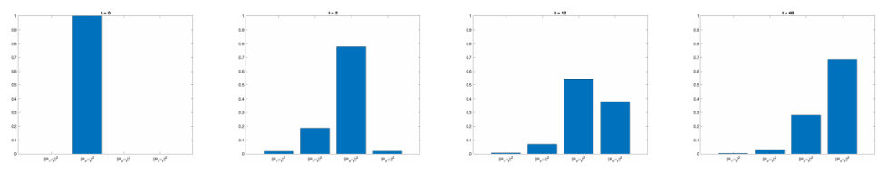
<figcaption class="paper-figure-caption"><b>Fig 1.</b> Figure 1: Histograms of pν(t) = ∥Pνψt∥2 at t = 0, 2, 12, 48 in arbitrary units, obtained through numerical simulation (courtesy of Cornelia Vogel) for a decomposition H = Hmc into macro spaces H1 ⊕H2 ⊕H3 ⊕H4 with dimensions d1 = 2, d2 = 20, d3 = 200, d4 = 2000, a typical ψ0 ∈S(H2), and a Hamiltonian that is a random band matrix. One can see that the family of histograms is approximately right-moving. The same data were displayed in [17, Fig. 1] in a different way.</figcaption>
</figure>
<figure class="paper-figure-card">
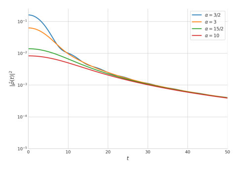
<figcaption class="paper-figure-caption"><b>Fig 2.</b> Figure 2: Numerical evidence suggesting that (33) holds for (32) for any α ≥1: The plot shows, for ρ given by (32) with C = 1 = Emax and several choices of α, |ˆρ(t)|2 as a function of t on a logarithmic scale; it is visible that each of the func- tions decreases monotonically. For other values of C &gt; 0 and Emax &gt; 0, the same monotonicity follows via scaling proper- ties.</figcaption>
</figure>
<figure class="paper-figure-card">
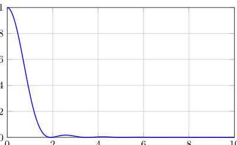
<figcaption class="paper-figure-caption"><b>Fig 3.</b> Figure 3: The plot shows the function φ2 1(t) = (J1(2t)/t)2. It is predominantly decreasing, but has oscillations of small amplitude.</figcaption>
</figure>
<figure class="paper-figure-card">

<figcaption class="paper-figure-caption"><b>Fig 4.</b> Figure 4: The plot shows the function φ1(t)φ2(t) = J1(2t)J2(2t)/t2, which is the time-dependent factor in (37).</figcaption>
</figure>
</div>
<p><strong>Summary.</strong> This paper investigates the emergence of the Second Law of Thermodynamics in closed quantum systems by analyzing the increase of quantum Boltzmann entropy. Using concepts like macro state decomposition and probability currents, the authors confirm the second law for various models, suggesting that irreversible behavior arises naturally from unitary quantum dynamics in the macroscopic limit.</p>
<p><strong>Why it may be interesting.</strong> This work directly tackles the foundational problem of how macroscopic irreversibility (the Second Law) emerges from unitary, reversible quantum mechanics, which is central to quantum foundations and statistical physics.</p>
<details>
<summary>Detailed structure</summary>
<p><strong>Main problem.</strong> The paper addresses the formulation and confirmation of precise versions of the second law of thermodynamics for closed macroscopic quantum systems.</p>
<p><strong>Main result.</strong> The authors confirm that the quantum Boltzmann entropy ($S_{qB}$) tends to increase over time for several simple models, suggesting the emergence of thermodynamic laws in isolated quantum evolution.</p>
<p><strong>Method.</strong> The analysis uses theoretical frameworks involving the decomposition of the Hilbert space into macro states and analyzing the time evolution of probability distributions and quantum currents.</p>
<p><strong>Model / system.</strong> The system is a closed macroscopic quantum system evolving unitarily in a finite-dimensional Hilbert space, decomposed into orthogonal macro subspaces ($H = igoplus H_
u$). Models include random matrix Hamiltonians (GUE/Wigner) and block-band matrices.</p>
<p><strong>Key observables.</strong> Quantum Boltzmann entropy ($S_{qB}(
u) = k_B \log \dim H_
u$), probability distribution of macro state weights ($p_
u(t)$), and probability current ($J_{\psi_0}^{
u
u'}(t)$).</p>
<p><strong>Important parameters / regimes.</strong> The dimension of the macro spaces ($d_
u$), the time evolution parameter ($t$), and the limit of large system size ($D   o \infty$).</p>
<p><strong>Assumptions / limitations.</strong> The analysis relies on the assumption of a pure initial state ($\psi$), the decomposition into macro states, and approximations like the Markovian master equation or the large dimension limit ($D 	o \infty$).</p>
<p><strong>Figures summary.</strong> Figure 3 shows a correlation function ($\phi_2^1(t)$) that is predominantly decreasing, while Figure 4 shows a product of correlation functions ($\phi_1(t)\phi_2(t)$) whose sign indicates whether the second law is violated or obeyed.</p>
<p><strong>Paper structure.</strong> The paper progresses by defining the quantum Boltzmann entropy, proposing weak and strong versions of the second law, analyzing these laws using probability flow and current definitions, and finally confirming these statements using specific random matrix models and mathematical limits.</p>
</details>
<details>
<summary>Abstract</summary>
<p>We consider a closed macroscopic quantum system in a pure state $ψ$ evolving unitarily with Hamiltonian $H$ in a finite-dimensional Hilbert space $\mathscr{H}$. Following von Neumann, we assume a decomposition of $\mathscr{H}$ into mutually orthogonal subspaces $\mathscr{H}_ν$, where each $ν$ represents a macro state, and $\mathscr{H}_ν$ contains the pure states compatible with $ν$. We define the quantum Boltzmann entropy for a macro state $ν$ as $S_\mathrm{qB}(ν) = k_{\mathrm{B}} \log \dim \mathscr{H}_ν$, where $k_\mathrm{B}$ is the Boltzmann constant. Goldstein et al. [http://arxiv.org/abs/1903.11870] have suggested, as a version of the second law of thermodynamics, that $S_\mathrm{qB}$ predominantly increases with time for realistic macroscopic systems. Here, we discuss precise versions of this statement and confirm them for several simple models of $H$ and $\mathscr{H}_ν$.</p>
</details>
<p><sub><a href="#top">↑ back to top</a></sub></p>

<p><a id="paper-2610.17347"></a></p>
<h3 id="on-the-statistical-mechanics-of-attention"><a href="http://arxiv.org/abs/2610.17347v1">On the Statistical Mechanics of Attention</a></h3>
<p><strong>Authors:</strong> Jerry Yao-Chieh Hu, Yu-An Chen, Maojiang Su, Han Liu<br>
<strong>Type:</strong> theory · <strong>Category:</strong> disordered systems and neural networks · <strong>PDF:</strong> <a href="https://arxiv.org/pdf/2610.17347v1">https://arxiv.org/pdf/2610.17347v1</a><br>
<strong>Analysis basis:</strong> full PDF text, analyzed in chunks</p>
<div class="figure-strip-hint">↔ Scroll figures horizontally</div>
<div class="paper-figures-scroll">
<figure class="paper-figure-card">

<figcaption class="paper-figure-caption"><b>Fig 1.</b> Figure 1: Illustration of the procedure from the microscopic to macroscopic energy land- scapes. Left. “(Microscopic) Fluctuations” means x is random, has nonzero variance, and follows Gibbs distribution pJ(x). Built from microscopic x, the local stable point xJ exhibits randomness. Middle. W[J] = log R</figcaption>
</figure>
<figure class="paper-figure-card">

<figcaption class="paper-figure-caption"><b>Fig 2.</b> Figure 2: Temperature analysis of the retrieval structure of MHM in the sparse regime (α = 2). (M = 100, d = 64). Results are averaged over 10 random pattern realizations, and shaded regions indicate one standard deviation across different seeds. (a) Retrieval branches. The maximal overlap z⋆ max under up- and down-sweeps of β exhibits hysteresis. (b) Support size. We compare the exact support size (active components of the probability distribution p), the inverse participation ratio (IPR), and the fixed score-threshold count (Section F.2). (c) Top branches. We track the top five stable branches ranked by z⋆ max. (d) Branch energies. We show the corresponding free energies of those top five...</figcaption>
</figure>
<figure class="paper-figure-card">
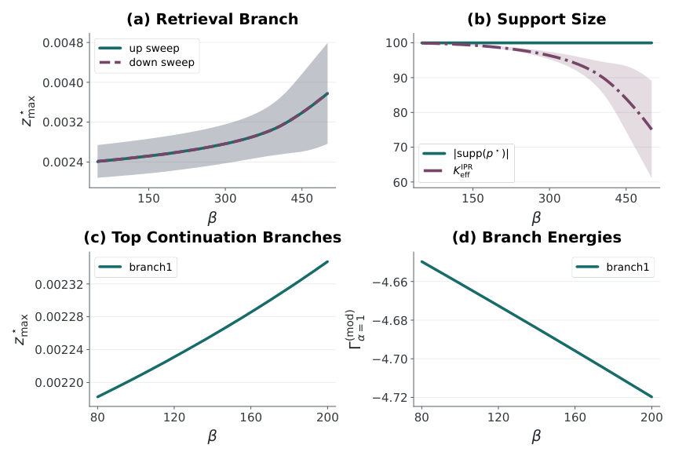
<figcaption class="paper-figure-caption"><b>Fig 3.</b> Figure 3: Temperature analysis of the retrieval structure of MHM in the dense regime (α = 1). (M = 100, d = 64). Results are averaged over 10 random pattern realizations, and shaded regions indicate one standard deviation across different seeds. (a) Retrieval branches. The maximal overlap z⋆ max under up- and down-sweeps of β shows no hysteresis. (b) Support size. We compare the exact support size (active components of the probability distribution p) and the inverse participation ratio (IPR) (Section F.2). (c) Top branches. We observe one single stable branch across the entire range of β. (d) Branch energies. We show the corresponding free energy of the branch.</figcaption>
</figure>
<figure class="paper-figure-card">

<figcaption class="paper-figure-caption"><b>Fig 4.</b> Figure 4: Memory-load analysis of the retrieval structure of MHM in the sparse regime (α = 2). (d = 48, β = 180). Results are averaged over 10 random pattern realizations, and shaded regions indicate one standard deviation across different seeds. (a) Retrieval branches. The maximal overlap z⋆ max under up- and down-sweeps of κ shows hysteresis. (b) Support size. We compare the exact support size |supp(p⋆)| (active components of the probability distribution p) and the inverse participation ratio (IPR) (Section F.2). (c) Top branches. We track the top five stable branches ranked by z⋆ max. (d) Branch energies. We plot the corresponding free energy of the five branches.</figcaption>
</figure>
<figure class="paper-figure-card">
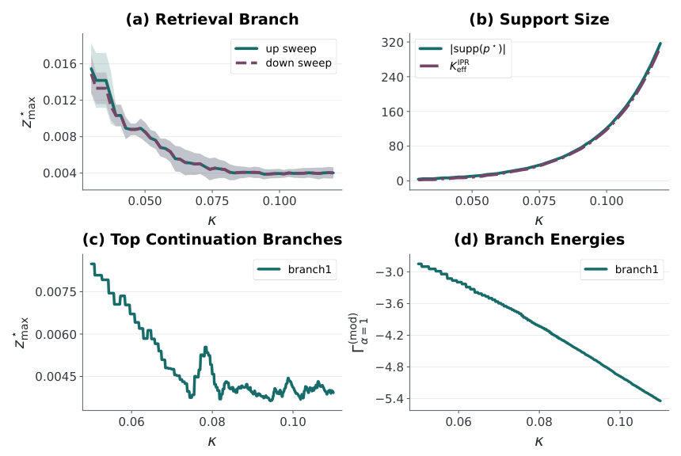
<figcaption class="paper-figure-caption"><b>Fig 5.</b> Figure 5: Memory-load analysis of the retrieval structure of MHM in the dense regime (α = 1). (M = exp(κd), d = 48, β = 180). Results are averaged over random pattern realizations, and shaded regions indicate one standard deviation across different seeds. (a) Retrieval branches. The maximal overlap z⋆ max under up- and down-sweeps of κ shows no hysteresis. (b) Support size. We compare the exact support size (active components of the probability distribution p) and the inverse participation ratio (IPR) (Section F.2). (c) Top branches. We track and observe only a single stable branch across the entire range of κ. (d) Branch energies. We plot the corresponding free energy of the branch.</figcaption>
</figure>
</div>
<p><strong>Summary.</strong> This paper develops a statistical mechanics framework to analyze Transformer attention by mapping it onto a Modern Hopfield Model. Using a free-energy formalism derived from Tsallis entropy, the authors characterize the phase structure, revealing distinct transitions between reliable and glassy inference regimes. This provides a fundamental physical understanding of attention's computational reliability.</p>
<p><strong>Why it may be interesting.</strong> The rigorous application of concepts from spin-glass theory (Hopfield models, free energy minimization) to a core component of modern AI (Transformers) provides a deep physical understanding of AI reliability.</p>
<details>
<summary>Detailed structure</summary>
<p><strong>Main problem.</strong> The paper aims to rigorously characterize the statistical mechanics of the Transformer attention mechanism to understand its parameter regimes and critical thresholds for reliable inference.</p>
<p><strong>Main result.</strong> Attention is shown to emerge naturally as the equation of motion derived from minimizing a free-energy functional, allowing for the identification of first-order phase transitions between glassy and robust-inference states.</p>
<p><strong>Method.</strong> The authors employ a free-energy formalism, connecting it to Tsallis entropy ($\Psi_\alpha$), and modeling the system using modern Hopfield models (MHM).</p>
<p><strong>Model / system.</strong> The system is the Transformer attention mechanism, mathematically mapped onto a Modern Hopfield Model (MHM) defined by a joint energy function. The analysis extends to stochastic queries and keys.</p>
<p><strong>Key observables.</strong> Free-energy landscape ($\Gamma_\alpha$), attention weights, phase structure (glassy vs. robust-inference), and critical thresholds.</p>
<p><strong>Important parameters / regimes.</strong> The Tsallis entropy index ($\alpha$), the memory load ($\kappa$), and the inverse temperature ($eta$).</p>
<p><strong>Assumptions / limitations.</strong> The analysis initially focuses on the deterministic regime (zero variance) but provides a framework to extend to fluctuations.</p>
<p><strong>Figures summary.</strong> Figures illustrate the procedure from microscopic fluctuations to the macroscopic energy landscape via Fenchel-Young duality, and numerical results validate theoretical formulas for coexistence and spinodal points.</p>
<p><strong>Paper structure.</strong> The paper progresses by establishing the physical formulation via MHM, deriving the free-energy landscape, analyzing the resulting phase transitions, and concluding with numerical validations of the theoretical predictions.</p>
</details>
<details>
<summary>Abstract</summary>
<p>We revisit the statistical mechanics of Transformer attention via modern Hopfield models. We present a free-energy formalism to characterize parameter regimes and critical thresholds for robust attention inference. The resulting free-energy landscape incorporates randomness in query states and attention weights. Attention then emerges as the equation of motion of the corresponding statistical-mechanical system (i.e., modern Hopfield model) through the standard free-energy minimization principle. This allows us to identify first-order phase transitions in attention between glassy and robust-inference phases. We further extend to attentions with stochastic queries and keys. Together, our results provide a rigorous statistical-mechanics framework for characterizing phase structure and inference reliability across a family of Transformer attention mechanisms.</p>
</details>
<p><sub><a href="#top">↑ back to top</a></sub></p>

<p><a id="paper-2610.18128"></a></p>
<h3 id="organisation-and-aggregation-of-calcium-carbonate-ions-in-water-via-molecular-simulation"><a href="http://arxiv.org/abs/2610.18128v1">Organisation and aggregation of calcium carbonate ions in water via molecular simulation</a></h3>
<p><strong>Authors:</strong> Elizaveta Sidler, Rita S Dias, Raffaela Cabriolu<br>
<strong>Type:</strong> theory · <strong>Category:</strong> statistical mechanics · <strong>PDF:</strong> <a href="https://arxiv.org/pdf/2610.18128v1">https://arxiv.org/pdf/2610.18128v1</a><br>
<strong>Analysis basis:</strong> full PDF text, analyzed in chunks</p>
<div class="figure-strip-hint">↔ Scroll figures horizontally</div>
<div class="paper-figures-scroll">
<figure class="paper-figure-card">

<figcaption class="paper-figure-caption"><b>Fig 1.</b> Figure 1: Simulation snapshots of the system with χion/w = 0.01 and Nion = 72 when (a) d Ca−C 6,min ≥λA (≈4.90 Å), (b) d Ca−C 6,min ≤λB (≈3.66 Å), (c) d C−Ca 6,min ≥λA (≈5.02 Å), (d) d C−Ca 6,min ≤λB (≈3.67 Å). Only calcium and carbonate ions are shown; water is omitted. Ions outside the corresponding coordination sphere are semitransparent. The distances between the central atom (Ca or C) and its 6 nearest neighbours (C or Ca) are indicated, with the corresponding 6th minimum distance enclosed in the green frame. Calcium atoms are shown in light pink, carbon atoms are in turquoise, and oxygen atoms are in magenta.</figcaption>
</figure>
<figure class="paper-figure-card">

<figcaption class="paper-figure-caption"><b>Fig 2.</b> Figure 2: FESs projected onto the d Ca−C 6,min and d C−Ca 6,min for the systems with compositions indicated in the legends. LFERs are outlined by the free energy contour lines.</figcaption>
</figure>
<figure class="paper-figure-card">

<figcaption class="paper-figure-caption"><b>Fig 3.</b> Figure 3: CFE surfaces as a function of the N CI−C ion and d Ca−C 6,min for the systems with compositions indicated in the legends.</figcaption>
</figure>
<figure class="paper-figure-card">

<figcaption class="paper-figure-caption"><b>Fig 4.</b> Figure 4: FESs projected onto d Ca−C 6,min and the corresponding N CI−C ion for the systems with compositions indicated in the legends.</figcaption>
</figure>
<figure class="paper-figure-card">
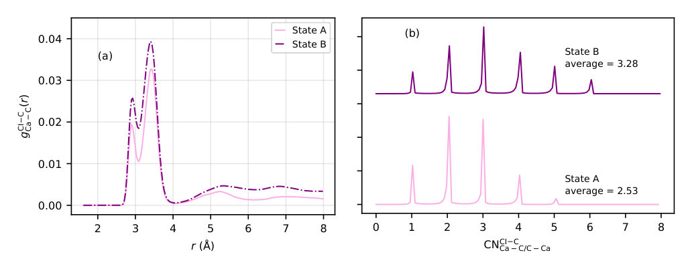
<figcaption class="paper-figure-caption"><b>Fig 5.</b> Figure 5: (a) Ca–C RDFs in states A and B, as indicated in the legend; (b) CNCI−C Ca−C/C−Ca histograms in states A and B, as indicated in the legend, including contributions from both Ca–C and C–Ca coordinations within the CI-cluster. All plots characterise the CI-cluster associated with d Ca−C 6,min OP in the system with χion/w = 0.01 and Nion = 108.</figcaption>
</figure>
</div>
<p><strong>Summary.</strong> This work uses advanced molecular simulations to study how calcium carbonate crystallizes in water, focusing on the interplay between local structural ordering and overall ion aggregation. By comparing results at different supersaturation levels, the authors reveal that the crystallization pathway is complex, involving multiple competing mechanisms. This highlights the necessity of separating the concepts of simple ion aggregation from true structural organization in early-stage crystallization.</p>
<p><strong>Why it may be interesting.</strong> The detailed kinetic and thermodynamic mapping of phase transitions in ionic systems, particularly distinguishing between local ordering and bulk aggregation, provides valuable insights into non-equilibrium statistical mechanics relevant to materials science.</p>
<details>
<summary>Detailed structure</summary>
<p><strong>Main problem.</strong> The study investigates the complex relationship between the initial formation of the first coordination sphere of calcium carbonate ($    ext{CaCO}_3$) and the overall process of ionic aggregation in aqueous solutions.</p>
<p><strong>Main result.</strong> The formation process exhibits distinct kinetic behaviors depending on the supersaturation level, revealing that the early stages involve two coexisting pathways: formation within small pre-formed clusters or within larger amorphous aggregates.</p>
<p><strong>Method.</strong> The research employs advanced molecular simulation techniques, specifically On-the-fly probability-enhanced sampling (OPES) to map free-energy landscapes and asynchronous replica exchange transition interface sampling ($\infty	ext{RETIS}$) to determine reaction kinetics.</p>
<p><strong>Model / system.</strong> The system models aqueous solutions of calcium carbonate ions ($    ext{Ca}^{2+}$ and $ ext{CO}_3^{2-}$), utilizing a full-atomistic interaction potential for $    ext{CaCO}_3$ and the $  ext{SPC/Fw}$ water model.</p>
<p><strong>Key observables.</strong> Free-energy landscapes, reaction rate constants, coordination numbers, cluster size changes ($\Delta N_{	ext{CI-C}_{	ext{ion}}}$), and the formation of the first coordination sphere.</p>
<p><strong>Important parameters / regimes.</strong> Two distinct levels of supersaturation ($\chi_{	ext{ion/w}}$) and varying ion concentrations are studied to map concentration-dependent aggregation regimes.</p>
<p><strong>Assumptions / limitations.</strong> The analysis distinguishes between changes in cluster size due to ion exchange versus changes due to the fundamental identity of the cluster changing.</p>
<p><strong>Figures summary.</strong> Figures summarize Free Energy Surfaces (FES) and Conditional Free Energy (CFE) profiles as a function of various distance parameters and ion pair interactions, alongside probability density functions for cluster size changes.</p>
<p><strong>Paper structure.</strong> The paper systematically compares results from different simulation methods (OPES vs. $\infty	ext{RETIS}$) across varying supersaturation regimes, detailing how the local ordering (coordination sphere) is coupled to the macroscopic aggregation state.</p>
</details>
<details>
<summary>Abstract</summary>
<p>Crystallisation of calcium carbonate (CaCO$_3$) in aqueous solutions is essential for carbon dioxide sequestration and the sustainable production of calcium carbonate materials, which are widely used in industry and increasingly explored for novel applications. While crystallisation is often analysed within the framework of classical nucleation theory, CaCO$_3$ and other ionic crystals often form through amorphous precursor phases, motivating the need for alternative descriptions. In this work, we investigate the relationship between the formation of the first CaCO$_3$ coordination sphere, a fundamental unit of local ordering, and ionic aggregation using two complementary simulation approaches: on-the-fly probability-enhanced sampling (OPES) and asynchronous and infinite-swap replica exchange transition interface sampling ($\infty$RETIS). OPES was used to explore free-energy landscapes, whereas $\infty$RETIS was used to determine reaction kinetics. We studied systems at two levels of supersaturation, between which the formation of the first coordination sphere exhibited distinct kinetic behaviour. These differences were found to be linked to concentration-dependent ionic aggregation. At lower concentration, aggregation remains limited, whereas higher concentration promotes extensive spinodal-like aggregation. For both concentrations, the first coordination sphere forms within the pre-formed clusters through one of two distinct pathways: either within a cluster close to the minimum size required for its formation, or within larger amorphous aggregates whose size and structure depend on concentration. The coexistence of these pathways at both levels of supersaturation reveals the multifaceted nature of early-stage CaCO$_3$ crystallisation and highlights the importance of differentiating ionic aggregation and organisation.</p>
</details>
<p><sub><a href="#top">↑ back to top</a></sub></p>

<p><a id="paper-2610.17755"></a></p>
<h3 id="pado-pauli-a-gpu-accelerated-implementation-of-pauli-propagation"><a href="http://arxiv.org/abs/2610.17755v1">PADO-Pauli: A GPU-Accelerated Implementation of Pauli Propagation</a></h3>
<p><strong>Authors:</strong> Hyunwoo Kim, Youngseok Lee<br>
<strong>Type:</strong> both · <strong>Category:</strong> quantum information and computing · <strong>PDF:</strong> <a href="https://arxiv.org/pdf/2610.17755v1">https://arxiv.org/pdf/2610.17755v1</a><br>
<strong>Analysis basis:</strong> full PDF text, analyzed in chunks</p>
<div class="figure-strip-hint">↔ Scroll figures horizontally</div>
<div class="paper-figures-scroll">
<figure class="paper-figure-card">

<figcaption class="paper-figure-caption"><b>Fig 1.</b> Figure 1: Overview of PADO-Pauli: a single compilation, with truncation applied at each propagation step, followed by multiple evaluations with gradients.</figcaption>
</figure>
<figure class="paper-figure-card">

<figcaption class="paper-figure-caption"><b>Fig 2.</b> Figure 2: Conceptual branching tree for Pauli propagation under parameterized rotations: non-commuting gates split a Pauli string into cosine and sine branches. Rot(θℓ) is the rotation RG(θℓ) of Eq. (4), and P ′, P ′′, P ′′′ the distinct strings its successive sine branches produce.</figcaption>
</figure>
<figure class="paper-figure-card">

<figcaption class="paper-figure-caption"><b>Fig 3.</b> Figure 3: Zero-filtering at compile time. Solid blue, strings reaching a kept output row; dashed red, strings removed because Tr[ρ0P] = ⟨00|P|00⟩= 0 for them or for every string they produce.</figcaption>
</figure>
<figure class="paper-figure-card">

<figcaption class="paper-figure-caption"><b>Fig 4.</b> Figure 4: Trained models of the three embedding tasks of Sec. 3.3; (c) is the model of Listing 3. In (b) and (c): shading, the model’s P(class=1); points, the training set (class 0 blue, class 1 orange); black contours, the P = 0.5 decision boundary.</figcaption>
</figure>
<figure class="paper-figure-card">

<figcaption class="paper-figure-caption"><b>Fig 5.</b> Figure 5: Convergence of coefficient truncation on a fixed 16-qubit, depth-3 Erdős–Rényi MaxCut-QAOA instance with max-weight truncation disabled. (a) truncated expectation value against the exact statevector value (dashed); (b) absolute error. In both panels the ϵ axis is logarithmic and reversed, running from 10−1 at the left to 10−6 at the right.</figcaption>
</figure>
</div>
<p><strong>Summary.</strong> This paper introduces PADO-Pauli, a GPU-accelerated toolkit for efficiently calculating expectation values of quantum circuits using Pauli propagation. It compiles the circuit structure once, allowing for extremely fast, batched evaluations and automatic differentiation necessary for training quantum machine learning models. The performance gains over existing methods make it a practical tool for variational quantum computing research.</p>
<p><strong>Why it may be interesting.</strong> It provides a highly optimized, differentiable classical tool for simulating quantum circuit dynamics, which is crucial for developing and benchmarking variational quantum algorithms in quantum information science.</p>
<details>
<summary>Detailed structure</summary>
<p><strong>Main problem.</strong> The core challenge is efficiently evaluating expectation values of parameterized quantum circuits many times during the training of variational quantum algorithms, especially when gradients are required.</p>
<p><strong>Main result.</strong> PADO-Pauli is presented as a GPU-accelerated engine that achieves significant speedups (up to 10x faster than cuPauliProp) and memory reductions compared to existing tools.</p>
<p><strong>Method.</strong> It uses Pauli propagation, approximating expectation values by evolving observables in the Heisenberg picture as a truncated sum of Pauli strings, implemented via a single, compiled GPU program.</p>
<p><strong>Model / system.</strong> The system involves quantum circuits whose observables are expressed as sums of Pauli strings. The method handles parameterized rotations and supports batch processing.</p>
<p><strong>Key observables.</strong> Expectation values of observables (Hamiltonians) written as sums of Pauli strings, and their gradients.</p>
<p><strong>Important parameters / regimes.</strong> Pauli weight and coefficient size for truncation; rotation angles ($    heta$) which are embedded as batch inputs.</p>
<p><strong>Assumptions / limitations.</strong> The method relies on truncation (by weight and coefficient size) to keep the computation tractable, assuming the total error is bounded by the sum of discarded coefficient masses.</p>
<p><strong>Figures summary.</strong> Figure 1 illustrates the workflow: single compilation $
ightarrow$ truncation $
ightarrow$ multiple evaluations with gradients. Figure 2 conceptually shows the branching structure during Pauli propagation.</p>
<p><strong>Paper structure.</strong> The paper details the need for efficient expectation value calculation, introduces the PADO-Pauli engine with its compilation and GPU acceleration, discusses the mathematical framework including truncation strategies, and validates performance against state-of-the-art tools.</p>
</details>
<details>
<summary>Abstract</summary>
<p>Variational quantum algorithms utilize parameterized circuits many times during training, at new parameter values, over batches of data, and with gradients. Pauli propagation approximates the expectation values of such circuits classically by evolving the observable in the Heisenberg picture as a truncated sum of Pauli strings. We present PADO-Pauli, a GPU engine for Pauli propagation that compiles a circuit and its observables once into sparse matrices in which each rotation angle contributes only a cosine and a sine factor, so every later evaluation reuses the compiled program. It evaluates batches of parameters and data inputs embedded as rotation angles. By default its gradients come from a vector-Jacobian product registered with PyTorch's automatic differentiation, so they flow through the angles to any classical layer that produces them. PADO-Pauli also provides truncation by Pauli weight and coefficient size, and noise channels. Zero-filtering removes terms that do not contribute to an expectation value in the all-zero reference state and makes the batched forward pass about 1.5 times faster. Compared to cuPauliProp on an NVIDIA A100, PADO-Pauli evaluates up to 10 times faster on 4 to 12 qubits and uses up to 3.1 times less memory on 16 qubits. We check its accuracy against exact statevector simulation up to 28 qubits. These features make PADO-Pauli a practical toolkit for training variational quantum algorithms, including quantum machine learning models.</p>
</details>
<p><sub><a href="#top">↑ back to top</a></sub></p>

<p><a id="paper-2610.17292"></a></p>
<h3 id="phase-coherent-spin-and-lattice-modulations-in-a-y-type-hexaferrite"><a href="http://arxiv.org/abs/2610.17292v1">Phase-Coherent Spin and Lattice Modulations in a Y-type Hexaferrite</a></h3>
<p><strong>Authors:</strong> Oskar Stepančić, Annika Stellhorn, Emma Campillo, Kun Zhai, Niklas Ekström, A. Corani, D. Alba Venero, R. Cubitt, E. Blackburn, L. Shen<br>
<strong>Type:</strong> experiment · <strong>Category:</strong> other · <strong>PDF:</strong> <a href="https://arxiv.org/pdf/2610.17292v1">https://arxiv.org/pdf/2610.17292v1</a><br>
<strong>Analysis basis:</strong> full PDF text, analyzed in chunks</p>
<div class="figure-strip-hint">↔ Scroll figures horizontally</div>
<div class="paper-figures-scroll">
<figure class="paper-figure-card">

<figcaption class="paper-figure-caption"><b>Fig 1.</b> FIG. 1. Field evolution of the (0, 0, L) scattering at 5 K in the I+ channel. (a)–(c) Reciprocal-space maps measured at 0, 1, and 5 T. (d)–(f) Corresponding longitudinal profiles and fits. Vertical guides indicate L = 1.5, L = 1.65, and the fitted center of the k0 satellite. With increasing field, the zero-field incommensurate k0 satellite gives way to the commensurate k2 component, while a third satellite, k3, becomes clearly resolved near L = 1.65 above approximately 2 T.</figcaption>
</figure>
<figure class="paper-figure-card">
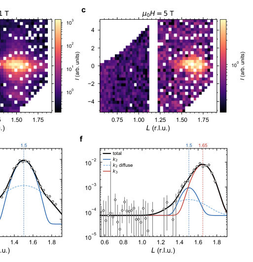
<figcaption class="paper-figure-caption"><b>Fig 2.</b> Figure 2 compares the temperature dependence of k2 at 1 T with that of k3 at 7 T. The integrated intensi- ties of both satellites decrease monotonically upon warm- ing, with the polarization-summed k3 intensity falling by a factor of 4.2 between 15 and 275 K. Their po-</figcaption>
</figure>
<figure class="paper-figure-card">
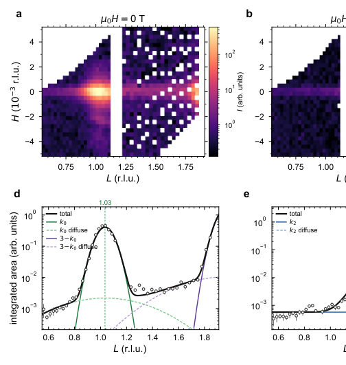
<figcaption class="paper-figure-caption"><b>Fig 3.</b> Figure 1 summarizes the field evolution of the (0, 0, L) scattering in the I+ channel. At zero field, the scattering is dominated by the incommensurate k0 ≈(0, 0, 1.03) component. With increasing field, the commensurate k2 = (0, 0, 1.5) component develops, followed at higher</figcaption>
</figure>
<figure class="paper-figure-card">
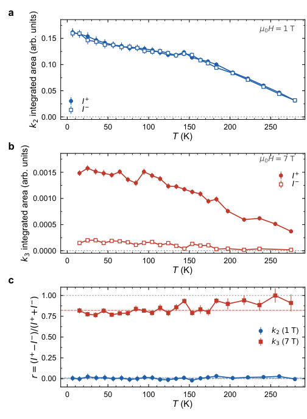
<figcaption class="paper-figure-caption"><b>Fig 4.</b> FIG. 2. Temperature dependence of the two satellites. (a) k2 integrated area at 1 T and (b) k3 at 7 T, in both polarization channels. (c) Asymmetry r of each. The commensurate k2 satellite is polarization-independent, r ≃0, whereas k3 main- tains r ≃0.8 at all temperatures probed.</figcaption>
</figure>
<figure class="paper-figure-card">

<figcaption class="paper-figure-caption"><b>Fig 5.</b> FIG. 4. The ±k3 pair at 7 T and 5 K, reconstructed from separate detector panels. (a) +k3 and (b) −k3; note the mir- rored abscissa. Curves are a joint fit of a Gaussian plus a polarization-independent constant. The asymmetry has the same sign at both satellites, r = +0.75(6) and +0.79(7): the polarization dependence is dominated by the even nuclear- magnetic interference term, with no odd chiral contribution resolved [Eq. (4)].</figcaption>
</figure>
</div>
<p><strong>Summary.</strong> This experiment uses polarized neutron scattering on a hexaferrite multiferroic to probe spin-lattice coupling. By measuring the nuclear-magnetic interference asymmetry at satellite peaks, the authors reveal a robust, field-induced longitudinal lattice distortion locked in phase with the magnetic modulation. This confirms fundamental magnetoelastic coupling in a high-field regime previously misunderstood.</p>
<p><strong>Why it may be interesting.</strong> This work provides direct experimental evidence of fundamental-wavevector spin-lattice coupling in a magnetic field regime, which is crucial for understanding magnetoelectric effects in complex oxides, linking magnetic order directly to structural distortion.</p>
<details>
<summary>Detailed structure</summary>
<p><strong>Main problem.</strong> The study investigates the elusive spin-lattice coupling in spin-driven multiferroics, specifically observing a magnetic modulation and a longitudinal lattice modulation locked in phase at the same wavevector.</p>
<p><strong>Main result.</strong> The Y-type hexaferrite $   ext{Ba}<em 1.6>{0.4}   ext{Sr}</em>}   ext{Mg<em 12>2   ext{Fe}</em>_3$ satellite, persisting to high temperatures.}    ext{O}_{22}$ exhibits a robust, field-induced, phase-coherent spin-lattice coupling signature ($r \simeq 0.8$) at the $    ext{k</p>
<p><strong>Method.</strong> The research employs half-polarized neutron scattering to measure the nuclear-magnetic interference asymmetry ($r$) at magnetic satellite peaks.</p>
<p><strong>Model / system.</strong> The physical system is the Y-type hexaferrite $ ext{Ba}<em 1.6>{0.4}   ext{Sr}</em>}   ext{Mg<em 12>2   ext{Fe}</em>$, a multiferroic material. The analysis focuses on the magnetic and lattice structure factors associated with incommensurate modulations.}    ext{O}_{22</p>
<p><strong>Key observables.</strong> Nuclear-magnetic interference asymmetry ($r$), intensity evolution of $    ext{k}_2$ and $ ext{k}_3$ satellites, and field/temperature dependence of these signals.</p>
<p><strong>Important parameters / regimes.</strong> High magnetic field regime (up to $7 	ext{ T}$), temperature range up to $275 	ext{ K}$, and the specific wavevectors $ ext{k}_2$ and $ ext{k}_3$.</p>
<p><strong>Assumptions / limitations.</strong> The analysis assumes the observed asymmetry originates from nuclear-magnetic interference, and that the modulation involves relative atomic displacements rather than a rigid translation of the basis.</p>
<p><strong>Figures summary.</strong> Figures show the field evolution of scattering intensities revealing the $ ext{k}_3$ satellite, and compare the temperature dependence of the asymmetries ($r$) for $  ext{k}_2$ (null) versus $   ext{k}_3$ (large and persistent).</p>
<p><strong>Paper structure.</strong> The paper progresses by establishing the necessity of probing spin-lattice coupling, using neutron scattering to detect the $  ext{k}_3$ satellite, quantifying the coupling via the asymmetry $r$, and finally interpreting this as a field-induced, phase-coherent magnetoelastic order.</p>
</details>
<details>
<summary>Abstract</summary>
<p>Spin-driven multiferroics owe their electric polarization to lattice distortions that follow the magnetic order, yet in incommensurate magnets symmetry normally forbids such a distortion at the fundamental magnetic wavevector, and the distortions themselves are rarely observed. Here we use half-polarized neutron scattering to show that the Y-type hexaferrite Ba$_{0.4}$Sr$_{1.6}$Mg$_2$Fe$_{12}$O$_{22}$ hosts, in its saturated high-field state, a magnetic modulation and a longitudinal lattice modulation at one and the same wavevector, locked in phase. The signature is a large nuclear-magnetic interference asymmetry, $r$ ~ 0.8, of the same sign at the two conjugate satellites and persisting to 275 K. The zone contrast and the field dependence of the satellite indicate an internal, field-induced longitudinal distortion. The modulated state coexists with the transverse-conical magnetoelectric phase and outlives it, revealing a fundamental-wavevector spin-lattice coupling in a magnetic field regime previously regarded as a simple ferrimagnet.</p>
</details>
<p><sub><a href="#top">↑ back to top</a></sub></p>

<p><a id="paper-2610.17708"></a></p>
<h3 id="qedia-quantum-program-verification-in-lean"><a href="http://arxiv.org/abs/2610.17708v1">QEDIA: Quantum Program Verification in Lean</a></h3>
<p><strong>Authors:</strong> Yuanjie, Ren, Zhicheng Zhang, Junyi Liu, Jinzheng Li, Yidi Qi, Mingsheng Ying<br>
<strong>Type:</strong> theory · <strong>Category:</strong> quantum information and computing · <strong>PDF:</strong> <a href="https://arxiv.org/pdf/2610.17708v1">https://arxiv.org/pdf/2610.17708v1</a><br>
<strong>Analysis basis:</strong> full PDF text, analyzed in chunks</p>
<div class="figure-strip-hint">↔ Scroll figures horizontally</div>
<div class="paper-figures-scroll">
<figure class="paper-figure-card">

<figcaption class="paper-figure-caption"><b>Fig 1.</b> Fig. 8. The workflow of the core agent with the quantum extension. Icons show whether Lean, Python scripts, or LLM review performs each acceptance check of Section 5.1. Dotted arrows show where the agents use the guidelines and the quantum extension.</figcaption>
</figure>
</div>
<p><strong>Summary.</strong> This paper introduces QEDIA, a novel framework for formally verifying quantum programs that mix classical and quantum computation within the Lean 4 proof assistant. It formalizes an extended Quantum Hoare Logic (QHL+) to handle the complex control flow inherent in modern quantum algorithms. By demonstrating verification of key circuits like QFT and Hamiltonian simulation, the work advances the state-of-the-art in automated quantum program verification.</p>
<p><strong>Why it may be interesting.</strong> This work provides a rigorous, automated tool for verifying the correctness of quantum algorithms, which is crucial for building reliable quantum hardware and software stacks.</p>
<details>
<summary>Detailed structure</summary>
<p><strong>Main problem.</strong> The core problem is the formal verification of quantum programs that involve complex interleaving between classical control flow and quantum computation.</p>
<p><strong>Main result.</strong> The authors present QEDIA, a framework that formalizes an extended Quantum Hoare Logic (QHL+) in Lean 4, successfully verifying complex circuits like QFT and Hamiltonian simulation.</p>
<p><strong>Method.</strong> The approach involves building a formal logic library in Lean 4 that mechanizes the interplay between classical variables (controlling gates/parameters) and quantum states, utilizing an LLM-based agent for proof construction.</p>
<p><strong>Model / system.</strong> The system modeled is a general quantum circuit executing quantum algorithms (e.g., QFT, QPE, Hamiltonian simulation) where classical variables dictate the sequence and parameters of quantum operations.</p>
<p><strong>Key observables.</strong> Verified circuits include the Quantum Fourier Transform (QFT), Phase Estimation (QPE), and the final state resulting from Hamiltonian simulation.</p>
<p><strong>Important parameters / regimes.</strong> The framework handles parameters related to circuit depth, error bounds ($\epsilon$), and the structure of the classical control flow.</p>
<p><strong>Assumptions / limitations.</strong> The primary assumption is the ability to mechanize the classical-quantum interplay across three levels: program syntax, proof logic, and underlying quantum mathematics.</p>
<p><strong>Figures summary.</strong> Figures illustrate the structure of complex circuits like Repeat-Until-Success (RUS), QFT, and Trotter simulation, highlighting the classical feedback mechanisms.</p>
<p><strong>Paper structure.</strong> The paper introduces QEDIA, formalizes QHL+ for classical-quantum programs, and then systematically verifies several canonical quantum algorithms (QFT, QPE, Hamiltonian simulation) using this framework.</p>
</details>
<details>
<summary>Abstract</summary>
<p>Practical quantum programs interleave quantum and classical computation: classical data shape the quantum operations that are performed, and measurement outcomes shape the classical computation that follows. Formal verification of such programs in a proof assistant requires mechanizing a program logic that handles this interplay consistently at every level, from the mathematics of quantum mechanics, through program syntax and semantics, to specifications and proof rules. Such mechanizations, along with the program proofs built on them, typically require substantial manual effort.   We present QEDIA, a framework for verifying quantum programs with classical variables in Lean 4. At its foundation is an open library that formalizes the quantum Hoare logic QHL+ across all these levels and proves the logic sound for both partial and total correctness. We construct the library and the program proofs, under human supervision, using an LLM-based prover agent, whose general-purpose core we extend for quantum program verification. We illustrate QEDIA with verified programs including the quantum Fourier transform, phase estimation, repeat-until-success circuits, and Hamiltonian simulation.</p>
</details>
<p><sub><a href="#top">↑ back to top</a></sub></p>

<p><a id="paper-2610.17351"></a></p>
<h3 id="qgrat-quantum-grade-aware-transformer-for-jet-tagging"><a href="http://arxiv.org/abs/2610.17351v1">QGrAT: Quantum Grade-Aware Transformer for Jet Tagging</a></h3>
<p><strong>Authors:</strong> Pallavi Bhardwaj, Michael Spannowsky<br>
<strong>Type:</strong> theory · <strong>Category:</strong> other · <strong>PDF:</strong> <a href="https://arxiv.org/pdf/2610.17351v1">https://arxiv.org/pdf/2610.17351v1</a><br>
<strong>Analysis basis:</strong> full PDF text, analyzed in chunks</p>
<div class="figure-strip-hint">↔ Scroll figures horizontally</div>
<div class="paper-figures-scroll">
<figure class="paper-figure-card">
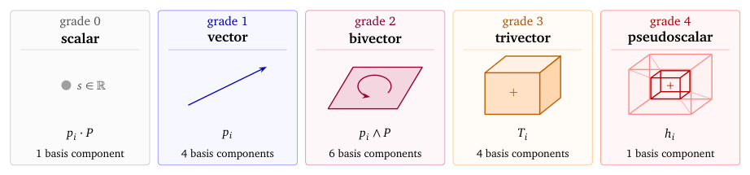
<figcaption class="paper-figure-caption"><b>Fig 1.</b> Figure 1: Geometric interpretation of the five grades in Cℓ(1,3) and the corresponding QGrAT features. The drawings schematically represent simple spacetime blades, with grade 4 shown as a projection of an oriented four-volume. The + signs select an orientation for the volumes. The component counts are the grade-subspace dimensions 4 g  , giving 1 + 4 + 6 + 4 + 1 = 16 basis blades. The implemented Ti sums weighted trivectors, while hi sums four-volume magnitudes and retains no orientation sign. All contractions use the Minkowski metric diag(+1,−1,−1,−1).</figcaption>
</figure>
<figure class="paper-figure-card">

<figcaption class="paper-figure-caption"><b>Fig 2.</b> Figure 2: The two QGrAT quantum circuits studied in this work. Both share the classical encoder, grade-aware IsingZZ(ηg) attention, the three-particle-product ancilla tap, and the variational (VQC) mixer, and differ only in the readout stage. (a) Main model, an in-circuit readout qubit qr coupled to the data register and the three-particle-product ancilla qT. (b) Classical-readout variant, where qr is removed and Pauli pair correlators over the data and ancilla qubits feed a learned Hamiltonian-observable head. Shaded boxes are classical stages drawn only as the source of the circuit inputs. Gate-level building blocks appear in Figs. 3–4.</figcaption>
</figure>
<figure class="paper-figure-card">

<figcaption class="paper-figure-caption"><b>Fig 3.</b> Figure 3: Full Grade-Aware Attention block at N=4 qubits (one per constituent), showing all active Clifford grades g ∈{0,1,2,3,4}. The mechanism is described in Section 4.3. Gray (grade 0, scalar p·P): one RY (α0) per qubit. Blue gradient (grade 1, four-momentum): RX(αE)RY (αpx)RZ(αpy)RX(αpz). Purple gradient (grade 2, bivector p∧P): RX RY RZ RX RY RZ, one per bivector blade. Orange gradient (grade 3, trivector Ti): RX RY RZ RX, one per trivector blade. Red (grade 4, four-volume magnitude hi): a single RX. The ZZg blocks (multi-qubit) carry the Clifford-pairing coupling angles η(i j) g , with the symmetry scope specified in Section 3.3, and the green RY RZ are independent variational...</figcaption>
</figure>
<figure class="paper-figure-card">

<figcaption class="paper-figure-caption"><b>Fig 4.</b> Figure 4: Block Tap: Hadamard-test ancilla tap at an illustrative N=4 data qubits. The generator and its gate realisation are given in Section 4.4. The ancilla is placed in |+〉by a Hadamard, controls a diagonal unitary on the data register, and is carried forward to the in-circuit readout qubit (“to QR”, Fig. 6), never measured directly. The cyan three-particle-product tap qT applies a controlled MultiRZ over data-qubit triples.</figcaption>
</figure>
<figure class="paper-figure-card">

<figcaption class="paper-figure-caption"><b>Fig 5.</b> Figure 6: Block QR: in-circuit Quantum Readout on an auxiliary qubit qr, drawn at an illustrative N=4 data qubits plus the three-particle-product ancilla qT (any enabled ancilla is coupled the same way), see Section 4.6.2. Dark red: Hadamard places qr in |+〉. Red blocks: individual IsingZZ(λZ i ) and IsingYY(λY i ) two-qubit gates between qr and each of the data qubits and qT, shown with a control dot on the data/ancilla wire and the gate label on qr. Light red: learned basis rotation RY (µ0) followed by RZ(µ1) on qr. Grey: 〈Zr〉 measurement, feeding ℓ= a〈Zr〉+ b.</figcaption>
</figure>
</div>
<p><strong>Summary.</strong> This paper introduces QGrAT, a quantum transformer designed for jet tagging in particle physics by embedding the spacetime geometry of particle momenta into its attention mechanism via the Clifford algebra. By leveraging Lorentz-invariant couplings and adding a three-particle interaction term, the model achieves state-of-the-art performance, demonstrating that incorporating fundamental physical symmetries significantly boosts classification power in quantum machine learning models.</p>
<p><strong>Why it may be interesting.</strong> While focused on particle physics, the core methodology—encoding geometric symmetries (Lorentz invariance) into quantum circuit couplings—provides a general blueprint for building physically informed quantum machine learning models applicable to complex quantum systems.</p>
<details>
<summary>Detailed structure</summary>
<p><strong>Main problem.</strong> The paper addresses the challenge of designing compact quantum jet taggers for particle physics searches, specifically for top quark identification at the LHC.</p>
<p><strong>Main result.</strong> The proposed QGrAT model achieved competitive performance (AUC 0.944) with a significant improvement in background rejection by incorporating an explicit three-particle interaction term.</p>
<p><strong>Method.</strong> It introduces QGrAT, a quantum transformer that encodes geometric features from constituent four-momenta using the grades of the spacetime Clifford algebra C(1,3) to define Lorentz-invariant attention couplings.</p>
<p><strong>Model / system.</strong> The system is jet substructure analysis using constituent four-momenta from hadronic decays. The model is QGrAT, which utilizes a quantum transformer architecture built upon geometric invariants derived from the Clifford algebra C(1,3) to structure its attention mechanism.</p>
<p><strong>Key observables.</strong> AUC, background rejection (1/epsilon_B), and signal efficiency (epsilon_S).</p>
<p><strong>Important parameters / regimes.</strong> Ten constituents per jet; twelve qubits and 144 trainable parameters for the optimized configuration.</p>
<p><strong>Assumptions / limitations.</strong> The component-wise input encoding makes the complete classifier frame dependent, despite the internal couplings being Lorentz invariant.</p>
<p><strong>Figures summary.</strong> Figure 1 illustrates the geometric interpretation of the five grades in C(1,3) and maps them to QGrAT features.</p>
<p><strong>Paper structure.</strong> The paper first establishes the physical problem and the mathematical framework using Clifford algebra to define Lorentz-invariant couplings. It then details the QGrAT architecture, including the three-particle ancilla, and concludes with performance evaluations on Top Tagging benchmarks.</p>
</details>
<details>
<summary>Abstract</summary>
<p>Lorentz symmetry and the three-prong structure of hadronic top decays provide physical guidance for designing compact quantum jet taggers. We introduce QGrAT (Quantum Grade-Aware Transformer), a quantum transformer that incorporates these structures into its interactions between constituent qubits. Geometric features constructed from the constituent four-momenta are organised by the grades of the spacetime Clifford algebra $C\ell(1,3)$, and their grade-specific inner products determine the pairwise attention couplings. For fixed constituents and co-transforming reference vectors, these couplings are Lorentz invariant, although the component-wise input encoding makes the complete classifier frame dependent. An auxiliary qubit introduces an explicit three-particle interaction through products of pairwise Minkowski inner products, while a trainable in-circuit readout converts the resulting quantum state into a classification score. We evaluate the architecture in state-vector simulation on the Top Tagging benchmarks. With ten constituents per jet, the configuration using grades $0\text{-}3$ and the three-particle ancilla requires twelve qubits and $144$ trainable parameters, reaching AUC $0.944 \pm 0.002$ and background rejection $1/\varepsilon_B = 35.7 \pm 2.4\ (96.8 \pm 7.7)$ at signal efficiency $\varepsilon_S = 0.50\ (0.30)$. This performance is competitive with the L-GATr-Slim baseline at matched constituent and parameter budgets. Adding the three-particle ancilla raises background rejection at $50\%$ signal efficiency from $19.9$ to $35.7$, whereas extending the representation to the tested grade-$4$ feature gives no consistent improvement. The study establishes a framework for incorporating spacetime geometry into quantum attention and identifies explicit three-particle correlations as the principal source of improved background rejection among the architectural variations tested.</p>
</details>
<p><sub><a href="#top">↑ back to top</a></sub></p>

<p><a id="paper-2610.17717"></a></p>
<h3 id="sampling-from-the-sherrington-kirkpatrick-model-up-to-criticality"><a href="http://arxiv.org/abs/2610.17717v1">Sampling from the Sherrington-Kirkpatrick Model up to Criticality</a></h3>
<p><strong>Authors:</strong> Hang Du, Brice Huang, Sidhanth Mohanty, Amit Rajaraman<br>
<strong>Type:</strong> theory · <strong>Category:</strong> disordered systems and neural networks · <strong>PDF:</strong> <a href="https://arxiv.org/pdf/2610.17717v1">https://arxiv.org/pdf/2610.17717v1</a><br>
<strong>Analysis basis:</strong> full PDF text, analyzed in chunks</p>
<div class="figure-strip-hint">↔ Scroll figures horizontally</div>
<div class="paper-figures-scroll">
<figure class="paper-figure-card">

<figcaption class="paper-figure-caption"><b>Fig 1.</b> Low-resolution page preview, page 2</figcaption>
</figure>
<figure class="paper-figure-card">
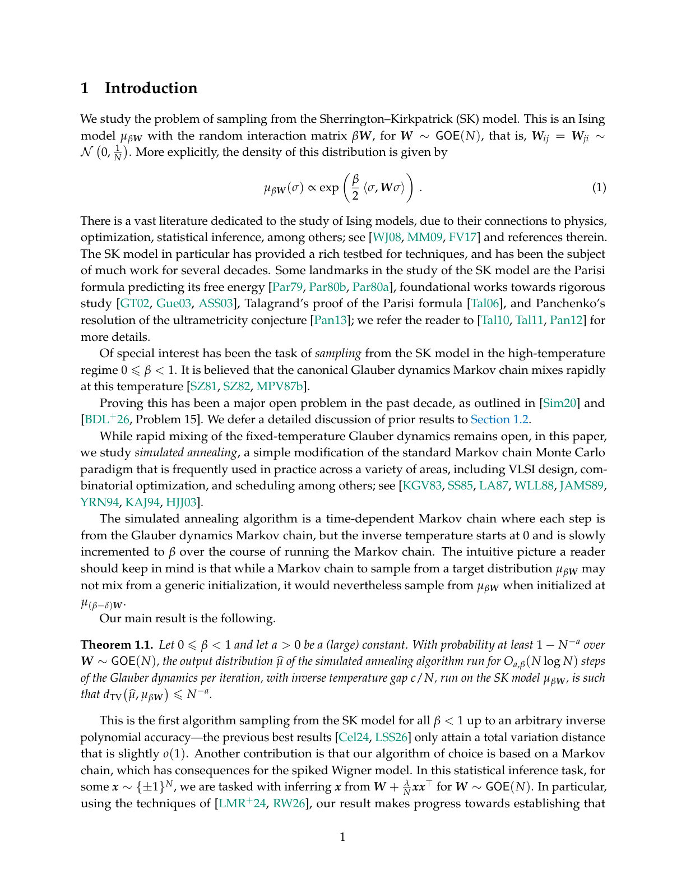
<figcaption class="paper-figure-caption"><b>Fig 2.</b> Low-resolution page preview, page 3</figcaption>
</figure>
<figure class="paper-figure-card">

<figcaption class="paper-figure-caption"><b>Fig 3.</b> Low-resolution page preview, page 4</figcaption>
</figure>
<figure class="paper-figure-card">

<figcaption class="paper-figure-caption"><b>Fig 4.</b> Low-resolution page preview, page 5</figcaption>
</figure>
<figure class="paper-figure-card">

<figcaption class="paper-figure-caption"><b>Fig 5.</b> Low-resolution page preview, page 6</figcaption>
</figure>
</div>
<p><strong>Summary.</strong> This work provides a rigorous mathematical proof demonstrating that simulated annealing efficiently samples the Sherrington-Kirkpatrick spin glass model up to criticality. It achieves this by establishing key mixing properties, such as the weak Poincaré inequality, and by developing advanced techniques to bound the covariance and derivatives of model observables.</p>
<p><strong>Why it may be interesting.</strong> The rigorous mathematical tools developed for bounding mixing times and analyzing high-dimensional random energy landscapes (like the SK model) are foundational for understanding complex energy minimization problems in quantum many-body physics and optimization.</p>
<details>
<summary>Detailed structure</summary>
<p><strong>Main problem.</strong> The paper addresses the challenge of efficiently sampling from the Sherrington-Kirkpatrick (SK) model, particularly near the critical inverse temperature $eta < 1$. It also focuses on bounding derivatives of key observables related to the model's structure.</p>
<p><strong>Main result.</strong> They prove that simulated annealing can sample the SK model to arbitrary inverse polynomial accuracy ($    ext{dTV} \le N^{-a}$) in $O(a, eta(N \log N))$ steps, and establish crucial bounds on the covariance matrix and derivatives of magnetization-related functions.</p>
<p><strong>Method.</strong> The analysis combines techniques from stochastic localization, weak Poincaré inequalities, and rigorous moment estimates derived through repeated differentiation of model identities.</p>
<p><strong>Model / system.</strong> The primary system is the Sherrington-Kirkpatrick (SK) model, an Ising spin glass with random interactions. The analysis often utilizes a 'planted model' approximation to make the stochastic localization trajectory tractable.</p>
<p><strong>Key observables.</strong> Total Variation Distance ($    ext{dTV}$), Weak Poincaré Inequality, Covariance Matrix ($ ext{Cov}(\mu_{eta W})$), Magnetization ($m(B)$), and correlation functions ($\kappa(B)$).</p>
<p><strong>Important parameters / regimes.</strong> Inverse temperature $eta < 1$, system size $N$, and the accuracy parameter $a$ (for $ ext{dTV} \le N^{-a}$).</p>
<p><strong>Assumptions / limitations.</strong> The proof relies on establishing the weak Poincaré inequality and bounding the covariance matrix, often requiring approximations like the planted model and assuming the validity of prior moment estimates.</p>
<p><strong>Paper structure.</strong> The paper develops results sequentially: first proving the weak Poincaré inequality (Theorem 1.2) for the SK model, then establishing covariance bounds (Theorem 1.3) via stochastic localization, and finally using advanced differentiation techniques (Lemmas A.7-A.13) to bound higher-order derivatives of observables.</p>
</details>
<details>
<summary>Abstract</summary>
<p>We prove that the simulated annealing algorithm efficiently samples from the Sherrington-Kirkpatrick model at inverse temperature $β< 1$ to an arbitrary inverse polynomial accuracy in total variation.</p>
</details>
<p><sub><a href="#top">↑ back to top</a></sub></p>

<p><a id="paper-2610.18202"></a></p>
<h3 id="theory-of-trotter-error-with-variable-weight-schedules"><a href="http://arxiv.org/abs/2610.18202v1">Theory of Trotter Error with Variable-Weight Schedules</a></h3>
<p><strong>Authors:</strong> Henrique Ennes<br>
<strong>Type:</strong> theory · <strong>Category:</strong> quantum information and computing · <strong>PDF:</strong> <a href="https://arxiv.org/pdf/2610.18202v1">https://arxiv.org/pdf/2610.18202v1</a><br>
<strong>Analysis basis:</strong> full PDF text, analyzed in chunks</p>
<div class="figure-strip-hint">↔ Scroll figures horizontally</div>
<div class="paper-figures-scroll">
<figure class="paper-figure-card">

<figcaption class="paper-figure-caption"><b>Fig 1.</b> FIG. 1. Top: Ordinary fixed-weight trotterization of the unitary U = exp[i(6H1 + 9H2)] using the pulses exp(i2H1) and exp(i3H2). The different steps are separated by the dashed rectangles; here the number of steps N is set to 3 for illustration purposes. Bottom: Variable-weight trotterization of the same target unitary, where the pulse weights are adjusted at later steps to suppress the accumulated error. While the fixed-weight trotterization solution converges to the target evolution with scaling O(N −1), our variable-weight schedule converges with scaling O(N −2).</figcaption>
</figure>
<figure class="paper-figure-card">
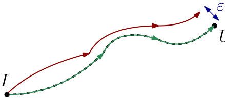
<figcaption class="paper-figure-caption"><b>Fig 2.</b> FIG. 2. A representation of the geometric intuition behind trotterization. The black dashed curve corresponds to the path γ(t) = exp(itH) in SU(d), starting at the identity when t = 0 and ending at γ(1) = U. The ideal integration curve (green), Sn = exp(inH/N), coincides with γ(n/N) and there- fore incurs no approximation error when n = N. On the other hand, a general trotterization scheme (red) uses actual steps T (n) and, at n = N, ends at distance ε (blue) from the target. Here N = 3 for illustration purposes.</figcaption>
</figure>
<figure class="paper-figure-card">

<figcaption class="paper-figure-caption"><b>Fig 3.</b> FIG. 3. Left: Estimated and observed errors according to dif- ferent trotterization bounds for different values of N. Here, a random SU(2) target is approximated with a fixed-weight trotterization solution, where H is assumed to be the set of three Pauli matrices and C = R3 (i.e., the solution is drift- free). Right: The error bound estimated according to equa- tion (14) as a function of the observed error, for 100 randomly sampled SU(2) targets, with N held fixed at 50. The dashed line has slope +1.</figcaption>
</figure>
<figure class="paper-figure-card">
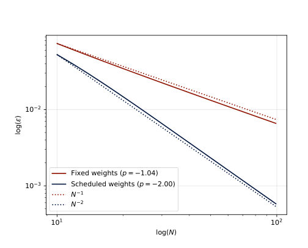
<figcaption class="paper-figure-caption"><b>Fig 4.</b> FIG. 4. Log-log plot of the observed trotterization error using the fixed- and scheduled-weight solutions. The fitted expo- nents (p), together with reference curves proportional to N −1</figcaption>
</figure>
<figure class="paper-figure-card">

<figcaption class="paper-figure-caption"><b>Fig 5.</b> FIG. 5. Left: Log-log plot of the observed trotterization error using the fixed- and scheduled-weight solutions for C = Z3, where H was taken to be small multiples of the three Pauli matrices and the target is a random SU(2) unitary. Refer- ence curves proportional to N −1 and N −2 are also shown. Right: The difference ∆L between the number of gates in the scheduled- and fixed-weight solutions for trotterization- based gate synthesis. Statistics were taken over 30 randomly generated SU(2) targets, and the filled region corresponds to one standard deviation around the average.</figcaption>
</figure>
</div>
<p><strong>Summary.</strong> This work introduces 'scheduled trotterization,' a method that allows the weights of local quantum pulses to vary over time to actively cancel accumulated errors. By treating the error as a schedulable quantity, the authors prove that the simulation error can be significantly reduced from $O(N^{-1})$ to $O(N^{-2})$. This offers a powerful theoretical tool for designing more accurate and efficient quantum simulation algorithms.</p>
<p><strong>Why it may be interesting.</strong> It provides a rigorous, mathematically advanced framework for optimizing quantum simulation protocols, directly impacting the achievable fidelity of quantum gates and time evolution simulations.</p>
<details>
<summary>Detailed structure</summary>
<p><strong>Main problem.</strong> The paper aims to improve the accuracy of quantum evolution simulation, specifically addressing the error accumulation inherent in Trotterization methods.</p>
<p><strong>Main result.</strong> By implementing a variable-weight scheduling scheme, the global approximation error can be theoretically improved from the standard $O(N^{-1})$ scaling to $O(N^{-2})$ for exact synthesis.</p>
<p><strong>Method.</strong> The analysis uses Lie group theory, expressing the global error as a product of transported local defects analyzed via the Baker-Campbell-Hausdorff formula.</p>
<p><strong>Model / system.</strong> The model involves approximating a target unitary evolution $U = \exp(itH)$ using a product formula derived from a finite set of available local Hamiltonians $\{H_j\}$ with variable weights.</p>
<p><strong>Key observables.</strong> Global approximation error ($\epsilon = \|U - W\|$); local defects and accumulated error terms.</p>
<p><strong>Important parameters / regimes.</strong> Number of steps ($N$); local covering parameter (for imperfect synthesis); small parameters ($\delta$, $\sigma$).</p>
<p><strong>Assumptions / limitations.</strong> The target Hamiltonian $H$ must belong to the real span of the available basis Hamiltonians $\{H_j\}$; the analysis relies on the BCH formula for small step sizes.</p>
<p><strong>Figures summary.</strong> Figure 1 compares fixed-weight ($O(N^{-1})$) vs. variable-weight ($O(N^{-2})$) trotterization; Figure 2 illustrates the geometric path difference between ideal and approximated evolution; Figure 3 compares various error bounds.</p>
<p><strong>Paper structure.</strong> The paper develops the error analysis by first establishing the general variable-weight framework, deriving error bounds using the transport identity, and then specializing to the fixed-weight limit and the imperfect synthesis case.</p>
</details>
<details>
<summary>Abstract</summary>
<p>Trotterization is a widely used algorithm for simulating quantum evolutions and consists of approximating a target unitary through a local linear decomposition of its generator that is repeated over $N$ steps. We introduce {scheduled trotterization}, a variable-weight modification in which the coefficients of the local linear decomposition are allowed to change from step to step. Using the geometry of the Lie group of unitary operators, we express the global endpoint error as a product of transported local defects, whose leading terms are obtained by two applications of the Baker-Campbell-Hausdorff formula, one inside each local step and one between different transported defects, separating the internal Trotter error from the external accumulation error. While we recover recent tighter bounds on the global approximation error when the weights are held fixed, the new framework allows us to propose a weight-varying schedule that significantly decreases the global error. For exact infinitesimal synthesis, we prove that this improves the usual fixed-weight $O(N^{-1})$ behavior to $O(N^{-2})$, without changing the basic pulse skeleton. We also extend the framework to imperfect infinitesimal synthesis, as arises in quantum gate synthesis problems, where admissible coefficients may only approximate the desired local corrections. In this case, the error is controlled by a local covering parameter measuring the quality of the available coefficient set. Numerical experiments for random $\SU(2)$ targets further support the predicted theoretical improvements. The results suggest a novel perspective for the analysis of Trotter errors, which can be treated as schedulable quantities to be coherently canceled at the endpoint.</p>
</details>
<p><sub><a href="#top">↑ back to top</a></sub></p>

<p><a id="paper-2610.17632"></a></p>
<h3 id="toward-interpretable-quantum-generators-for-financial-returns-through-problem-informed-circuit-design"><a href="http://arxiv.org/abs/2610.17632v1">Toward Interpretable Quantum Generators for Financial Returns through Problem-Informed Circuit Design</a></h3>
<p><strong>Authors:</strong> Huijie Guan, Xuanhao Wang, Shengbin Wang, Jiale Zhang, Jian Ding, Shuxin Xie, Dongdong Li, Jianjian Gao, Hantao Sun, Wenhao Chu<br>
<strong>Type:</strong> theory · <strong>Category:</strong> quantum information and computing · <strong>PDF:</strong> <a href="https://arxiv.org/pdf/2610.17632v1">https://arxiv.org/pdf/2610.17632v1</a><br>
<strong>Analysis basis:</strong> full PDF text, analyzed in chunks</p>
<div class="figure-strip-hint">↔ Scroll figures horizontally</div>
<div class="paper-figures-scroll">
<figure class="paper-figure-card">

<figcaption class="paper-figure-caption"><b>Fig 1.</b> Fig. 1 Problem-informed generator design. (a) Window-specific latent variables z(w) represent unresolved conditions and innovations, while shared coefficients θ encode the approximate temporal- homogeneity prior. (b) The design and testing workflow maps empirical structure to operator-role hypotheses and evaluates their statistical consequences. Ablations are shown as further tests.</figcaption>
</figure>
<figure class="paper-figure-card">

<figcaption class="paper-figure-caption"><b>Fig 2.</b> Fig. 2 Problem-informed quantum generator architectures. All three generators act on eight qubits and produce the grouped expectation-value vector in Eq. (10). Dashed enclosures show the layer schedules for (a) ZZ, (b) ZZ–CRX, and (c) Time evolution. (d) Representative circuit operations; basis-dual and mixed-basis boundary operations are omitted for visual economy.</figcaption>
</figure>
<figure class="paper-figure-card">
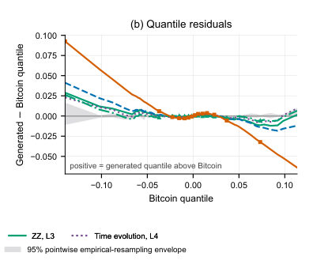
<figcaption class="paper-figure-caption"><b>Fig 3.</b> Fig. 3 Representative marginal diagnostics. (a) Return densities for Bitcoin and the selected representatives ZZ L3/run 2, ZZ–CRX L1/run 1, time-evolution L4/run 0, TCNN W6/run 2, and the two-parameter classical control/run 1. (b) Generated minus Bitcoin quantiles on the common 240-point probability grid. The grey region is a 95% pointwise empirical-resampling envelope from 10,000 fixed-seed complete-window resamples of 2,297 windows each. It describes variability under window resampling, without accounting for serial dependence between overlapping historical windows. This figure reports representative configurations under the marginal-only selection rule and is not a formal...</figcaption>
</figure>
<figure class="paper-figure-card">

<figcaption class="paper-figure-caption"><b>Fig 4.</b> Fig. 4 Short-window temporal structure. (a) Window-level absolute-return ACF distributions for Bitcoin and ZZ–CRX L1 at lags 1–4; violins show densities and horizontal segments mark medians. (b) Median absolute-return ACF for Bitcoin and the selected ZZ L3, ZZ–CRX L1, and time-evolution L4 representatives. (c) Differences in median leverage between ZZ–CRX and ZZ at matched depths; negative values indicate lower leverage under ZZ–CRX. Shading shows 95% simultaneous max-t bootstrap intervals over the four lags, for the medians in (b) and the differences in (c). Configurations were selected using marginal criteria. The leverage comparison uses independently trained runs and is not a controlled...</figcaption>
</figure>
<figure class="paper-figure-card">
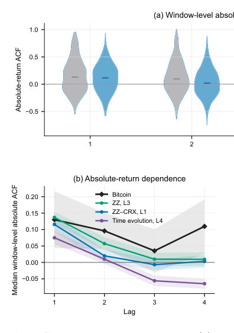
<figcaption class="paper-figure-caption"><b>Fig 5.</b> Figure 5 shows the marginal and lag-averaged temporal objectives over the two parameters of three selected problem-informed configurations.</figcaption>
</figure>
</div>
<p><strong>Summary.</strong> This work proposes a novel, problem-informed framework to build interpretable quantum generators for financial time series data using a Quantum GAN. By incorporating structural assumptions like symmetry and directed couplings, the authors design compact quantum circuits that successfully model complex statistical features of Bitcoin returns. This demonstrates a path toward linking fundamental circuit architecture choices directly to observable, measurable statistical behavior.</p>
<p><strong>Why it may be interesting.</strong> It demonstrates how imposing domain-specific physical or structural knowledge (problem-informed design) can constrain quantum circuit ansatzes, leading to more interpretable and parameter-efficient quantum models, which is a key goal in quantum machine learning.</p>
<details>
<summary>Detailed structure</summary>
<p><strong>Main problem.</strong> The paper addresses the interpretability and expressivity trade-off when using quantum circuits as function approximators for complex tasks like financial return generation.</p>
<p><strong>Main result.</strong> The proposed problem-informed framework successfully guides the design of compact quantum generators that recover meaningful marginal and temporal distributional features of financial returns.</p>
<p><strong>Method.</strong> A hybrid Wasserstein Quantum Generative Adversarial Network (QGAN) is employed, utilizing problem-informed circuit design principles like symmetry-inspired parameter sharing.</p>
<p><strong>Model / system.</strong> The model uses quantum circuits (ZZ, directed ZZ-CRX, structured time evolution) acting as expectation-value samplers within a QGAN framework to generate 16-step Bitcoin return windows.</p>
<p><strong>Key observables.</strong> Marginal and temporal distributional features, median leverage, and the structure of the parameter landscape.</p>
<p><strong>Important parameters / regimes.</strong> Circuit depth (1 to 4 layers) and number of trainable coefficients (1 to 8).</p>
<p><strong>Assumptions / limitations.</strong> The design assumes that structural assumptions (e.g., nearest-neighbor couplings, directed controls) can guide the construction of compact, interpretable quantum generators.</p>
<p><strong>Figures summary.</strong> Figures illustrate the problem-informed generator design, mapping empirical financial structures (like ACF or leverage asymmetry) to specific quantum operators and predicting falsifiable outcomes.</p>
<p><strong>Paper structure.</strong> The paper introduces the problem-informed framework, details the QGAN setup and circuit architectures, evaluates performance against classical methods, and analyzes the resulting parameter landscapes to explain model behavior.</p>
</details>
<details>
<summary>Abstract</summary>
<p>When used as function approximators, quantum circuits often lack interpretability and face a fundamental trade-off between expressivity and trainability. We propose a problem-informed framework for financial return generation that uses relational structure and symmetry-inspired parameter sharing to guide the construction of quantum circuits with few trainable parameters and empirically testable operator roles. We evaluate three quantum generator architectures, referred to as ZZ, directed ZZ-CRX, and structured time evolution, within a hybrid Wasserstein quantum generative adversarial network trained to generate 16-step Bitcoin return windows. Across circuits with one to four layers and one to eight trainable coefficients, these generators recover meaningful marginal and temporal distributional features, while single-layer configurations remain competitive with deeper variants. Across matched depths, independently trained ZZ-CRX configurations exhibit a predominantly downward shift in median leverage relative to ZZ, consistent with the intended directional role of the controlled-rotation construction. The small number of coefficients also enables direct landscape analysis, revealing competing parameter preferences between marginal and temporal objectives and helping to explain the difficulty of finding parameter settings that perform well on both. These results provide an initial demonstration that structural assumptions can guide the design of compact quantum generators and link circuit architecture to observable statistical behaviour, motivating more systematic and parameter-efficient approaches to quantum circuit construction.</p>
</details>
<p><sub><a href="#top">↑ back to top</a></sub></p>

<p><a id="paper-2610.17236"></a></p>
<h3 id="whither-quantum-advantage-new-classical-lower-bounds-for-max-cut-on-large-girth-3-regular-graphs"><a href="http://arxiv.org/abs/2610.17236v1">Whither quantum advantage? New classical lower bounds for Max-Cut on large-girth 3-regular graphs</a></h3>
<p><strong>Authors:</strong> Flaviano Morone, Shivang Rawat, Dries Sels<br>
<strong>Type:</strong> theory · <strong>Category:</strong> disordered systems and neural networks · <strong>PDF:</strong> <a href="https://arxiv.org/pdf/2610.17236v1">https://arxiv.org/pdf/2610.17236v1</a><br>
<strong>Analysis basis:</strong> full PDF text, analyzed in chunks</p>
<div class="figure-strip-hint">↔ Scroll figures horizontally</div>
<div class="paper-figures-scroll">
<figure class="paper-figure-card">
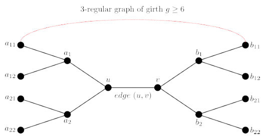
<figcaption class="paper-figure-caption"><b>Fig 1.</b> FIG. 1. Section of a 3-regular graph of girth g ≥6. The radius-2 neighborhood of an edge (u, v), consisting of the 14 vertices within distance 2 of u or v, and the 13 edges incident to u, v and their neighbors. The girth forces this tree structure. Any further edge among these vertices must join two leaves (since every other vertex already has degree 3) and it is allowed only if the two leaves lie on opposite sides of (u, v), where it closes a cycle of length 6 (dashed edge).</figcaption>
</figure>
<figure class="paper-figure-card">

<figcaption class="paper-figure-caption"><b>Fig 2.</b> FIG. 2. Cut fraction versus depth on 3-regular graphs of girth g ≥2p + 2. Tree values cVIRAL(p) of Table I (cir- cles), QAOA values of Ref. [4] (squares) and explicit vector algorithm (TPM) of Ref. [8] (triangles). Statistical errors are smaller than the symbols. The dashed line is the up- per bound 0.92386 of Eq. (2), the dotted line the previous asymptotic lower bound 0.912. Inset: p ≥20, with the lower confidence bound L of Table I (open circles), which crosses 0.912 at p = 32. Lines are guides to the eye.</figcaption>
</figure>
<figure class="paper-figure-card">
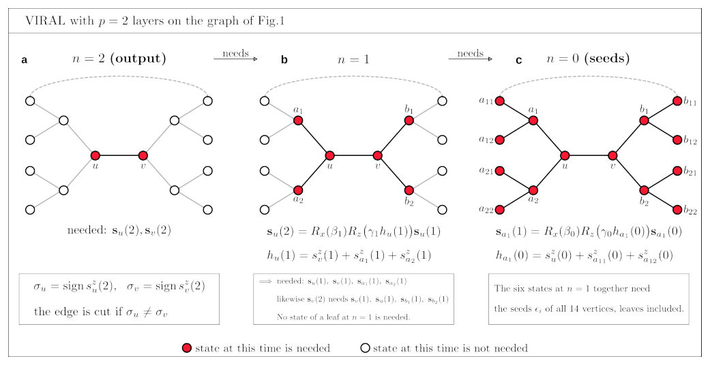
<figcaption class="paper-figure-caption"><b>Fig 3.</b> FIG. 3. VIRAL with p = 2 layers on the graph of Fig. 1 traced backwards from the output. (a), The cut variables σu, σv need su(2) and sv(2). (b), Through Eq. (3) these need the states at n = 1 of u, v and their four other neighbors a1, a2, b1, b2. No state of a leaf is needed at n = 1 or n = 2. (c), These six states need the seeds of all 14 vertices. The leaves enter only through their seeds, so the edges joining two leaves, such as the dashed one, play no role. Hence (σu, σv) is a fixed function of the 14 i.i.d. seeds on the tree of Fig. 1, the same for every edge of every 3-regular graph of girth g ≥6.</figcaption>
</figure>
</div>
<p><strong>Summary.</strong> This work investigates the Max-Cut problem on large-girth 3-regular graphs to test for quantum advantage. By analyzing the local tree structure, the authors derive rigorous lower bounds using a classical local algorithm called VIRAL. These classical bounds surpass recent quantum bounds (QAOA) for several depths, suggesting that quantum advantage may not be guaranteed for this type of optimization problem.</p>
<p><strong>Why it may be interesting.</strong> The paper directly addresses the boundary of quantum advantage by showing that classical local algorithms can achieve bounds comparable to or exceeding those from QAOA for specific optimization problems on structured graphs.</p>
<details>
<summary>Detailed structure</summary>
<p><strong>Main problem.</strong> The paper aims to determine the maximum cut fraction ($M_g$) for 3-regular graphs with large girth, specifically challenging the notion of quantum advantage in optimization.</p>
<p><strong>Main result.</strong> A classical local algorithm (VIRAL) provides rigorous lower bounds on $M_g$ that exceed those from QAOA for even depths $p \ge 4$, suggesting a potential absence of quantum advantage for this specific problem.</p>
<p><strong>Method.</strong> The analysis leverages the fact that for large girth, the local structure around any edge is a tree, allowing the calculation of the expected cut fraction using local algorithms like VIRAL.</p>
<p><strong>Model / system.</strong> The model is the Max-Cut problem applied to 3-regular graphs whose girth $g$ is large. The analysis focuses on the local tree structure (radius-$p$ neighborhood) of these graphs.</p>
<p><strong>Key observables.</strong> The maximum cut fraction $M_g = \inf_{G} rac{	ext{MaxCut}(G)}{|E(G)|}$, and the expected cut fraction $c_{	ext{VIRAL}}(p)$ derived from local algorithms.</p>
<p><strong>Important parameters / regimes.</strong> The girth $g$ (analyzed up to $g=66$) and the depth $p$ of the local algorithm ($p \le 32$).</p>
<p><strong>Assumptions / limitations.</strong> The analysis assumes the graph girth $g \ge 2p+2$ to ensure the neighborhood structure is a tree, simplifying the calculation of the expected cut fraction.</p>
<p><strong>Figures summary.</strong> Figures illustrate the structure of the radius-2 neighborhood and plot the calculated cut fraction bounds for VIRAL, QAOA, and TPM across different depths $p$.</p>
<p><strong>Paper structure.</strong> The paper establishes the theoretical bounds for $M_g$, introduces the local algorithm (VIRAL), derives the lower bound based on the tree structure, and compares these classical bounds against established quantum bounds (QAOA).</p>
</details>
<details>
<summary>Abstract</summary>
<p>Every 3-regular graph of girth at least $g$ has a cut containing at least a fraction $M_g$ of its edges, and the best rigorous bounds at large girth are $0.912\le \lim_{g\to\infty}M_g \le 0.92386$. Lower bounds on $M_g$ follow from the performance of local algorithms: on a graph of girth $g \ge 2p+2$ a depth-$p$ local algorithm sees the same tree around every edge, so its expected cut fraction on that tree bounds $M_g$ from below. We apply this strategy to the Variational Iterative Rotation Algorithm (VIRAL), a classical local algorithm, and evaluate it on the depth-$p$ tree for every even depth up to $p=32$. The resulting bounds exceed those recently obtained from the Quantum Approximate Optimization Algorithm (QAOA) for every $p\ge 4$, by $0.005$ to $0.011$, and they extend the range of girths covered from $g=36$ to $g=66$. Notably, at $g=66$ we obtain $M_{66} \ge 0.9127$ at $99.99999\%$ confidence level, which raises the asymptotic lower bound from $0.912$ to $0.9127$.</p>
</details>
<p><sub><a href="#top">↑ back to top</a></sub></p>
</details>
<h2 id="secondary-cond-mat-archives">Secondary cond-mat archives</h2>
<p><em>Papers from cond-mat.mtrl-sci, mes-hall, other, soft, supr-con. These archives are de-prioritized — they appear at the end regardless of relevance score.</em></p>
<h3 id="relevant-in-secondary-archives-13">Relevant in secondary archives (13)</h3>

<p><a id="paper-2610.18191"></a></p>
<h3 id="feedback-controlled-self-trapping-of-solitons"><a href="http://arxiv.org/abs/2610.18191v1">Feedback-Controlled Self-Trapping of Solitons</a></h3>
<p><strong>Authors:</strong> Raonaqul Islam, Pradyoth Shandilya, Yunxiang Song, Alioune Niang, Gary Carter, Thomas Carruthers, Curtis Menyuk, Ergun Simsek<br>
<strong>Type:</strong> theory · <strong>Category:</strong> other · <strong>PDF:</strong> <a href="https://arxiv.org/pdf/2610.18191v1">https://arxiv.org/pdf/2610.18191v1</a><br>
<strong>Analysis basis:</strong> full PDF text, analyzed in chunks
<strong>Topic relevance:</strong> 🔥 <code>quantum measurements</code> <strong>4/5</strong> · <code>driven-dissipative phase transition</code> <strong>3/5</strong> · <code>methods for driven-dissipative</code> <strong>3/5</strong> · <code>Keldysh / 2PI / non-Gaussian methods</code> <strong>1/5</strong> · <code>interference shaping light</code> <strong>1/5</strong> · <code>non-equilibrium universality</code> <strong>1/5</strong></p>
<div class="figure-strip-hint">↔ Scroll figures horizontally</div>
<div class="paper-figures-scroll">
<figure class="paper-figure-card">

<figcaption class="paper-figure-caption"><b>Fig 1.</b> Figure 1: (a) DKS-microcomb generation using a microresonator pumped by a CW laser. (b) Comb lines of the resulting microcomb are broadened because of fluctuations in frep due to noise (c). (d) DKS is trapped using phase modulation of the pump laser, resulting in reduced broadening of comblines (e) and a lower range of fluctuations in frep (f). (g) Proposed self-trapping scheme, where trapping is achieved using feedback, consequently exhibiting less broadened comblines (h) and a decrease in frep fluctuations (i). BPF: Band pass filter, AMP: RF amplifier, EOM: electro-optics modulator, PD: photodetector, OSC: RF oscillator.</figcaption>
</figure>
<figure class="paper-figure-card">
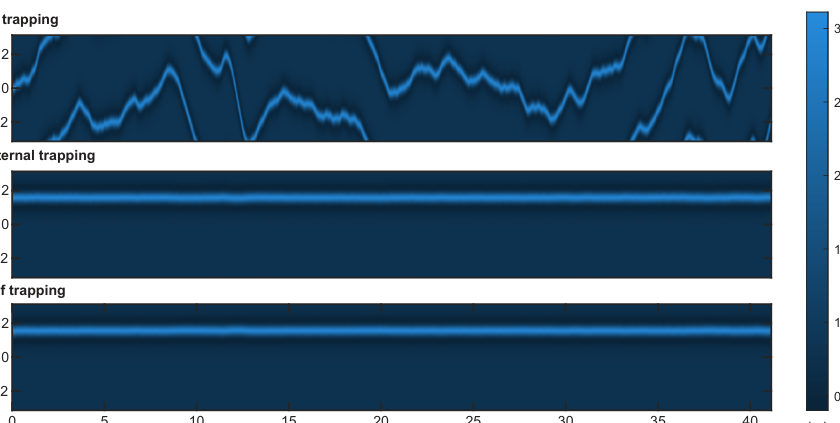
<figcaption class="paper-figure-caption"><b>Fig 2.</b> Figure 3: Numerical simulation of soliton evolution in the presence of frep noise. When untrapped, the soliton does a random walk in the azimuthal domain (a). By contrast, the soliton does not visibly move when there is either (b) external or (c) feedback-controlled trapping</figcaption>
</figure>
<figure class="paper-figure-card">

<figcaption class="paper-figure-caption"><b>Fig 3.</b> Figure 4: Theoretically and numerically obtained power spectral density of frep noise for (a) unmodulated pumped system with no trapping, (b) externally trapped soliton system, and (c) the proposed feedback controlled self-trapping scheme.</figcaption>
</figure>
<figure class="paper-figure-card">

<figcaption class="paper-figure-caption"><b>Fig 4.</b> Figure 5: Theoretical and numerical power spectral density of frep noise for (a) untrapped, (b) externally trapped, and (c) self-trapped systems when the noise source is only TRN instrinsic in the microresonator.</figcaption>
</figure>
</div>

<p><strong>Summary.</strong> This paper introduces a novel feedback-controlled self-trapping technique to stabilize microcombs generated in chip-scale microresonators. By using the comb's own beat note for phase modulation, it overcomes the need for bulky external low-noise sources. The method effectively suppresses intrinsic noise, making high-performance, integrated photonic metrology feasible.</p>
<p><strong>Why it may be interesting.</strong> This work is highly relevant to quantum optics and open quantum systems, as it deals with stabilizing coherent quantum light sources (frequency combs) against environmental and intrinsic noise sources using feedback control.</p>
<details>
<summary>Detailed structure</summary>
<p><strong>Main problem.</strong> The primary challenge addressed is suppressing the impact of intrinsic microresonator noise on the repetition-rate jitter of microcombs generated on chip-scale platforms.</p>
<p><strong>Main result.</strong> The proposed feedback-controlled self-trapping scheme successfully suppresses noise to levels comparable with external referencing, while maintaining full chip integration capability.</p>
<p><strong>Method.</strong> The authors develop and analyze both analytical and numerical models based on the Lugiato–Lefever equation, employing linear stability analysis and Power Spectral Density (PSD) calculations.</p>
<p><strong>Model / system.</strong> The system involves Dissipative Kerr Solitons (DKSs) in chip-scale microresonators, modeled by the Lugiato–Lefever equation. The core mechanism involves using the comb's beat note to phase-modulate the pump laser for self-trapping.</p>
<p><strong>Key observables.</strong> Repetition rate ($ ext{freq}$ or $ ext{frep}$), microcomb line broadening, and the Power Spectral Density (PSD) of the repetition-rate noise ($\Delta\omega_{rep}$).</p>
<p><strong>Important parameters / regimes.</strong> Intrinsic microresonator noise, pump-laser noise, and the required anomalous group-velocity dispersion regime.</p>
<p><strong>Assumptions / limitations.</strong> The analysis assumes the modulation-induced trapping potential remains effective despite inheriting fluctuations correlated with the microcomb repetition-rate jitter.</p>
<p><strong>Figures summary.</strong> Figures illustrate the progression from DKS generation to noise effects, comparing the noise PSDs for untrapped, externally trapped, and the proposed self-trapping schemes.</p>
<p><strong>Paper structure.</strong> The paper progresses by first establishing the physical model (LLE), then analyzing the noise limitations of traditional methods, and finally proposing and validating the feedback-controlled self-trapping scheme using detailed numerical and analytical comparisons of noise suppression.</p>
</details>
<details>
<summary>Abstract</summary>
<p>Chip-scale microresonator-based frequency combs, commonly referred to as microcombs, are promising sources for field-deployable metrology applications. However, intrinsic microresonator noise can make it difficult to generate microcombs with sufficiently low noise for applications. A widely used approach to overcome this limitation is to trap the DKS in the microresonator by phase-modulating the pump laser, although integrating a low-noise modulation reference in a fully on-chip platform remains challenging. Here, we propose an optoelectronic self-trapping scheme in which the impact of intrinsic microresonator noise on microcomb repetition-rate jitter is suppressed through feedback-controlled phase modulation of the driving laser so that the intrinsic noise of the laser sets the ultimate performance limit. This modification eliminates the need for an external low-phase-noise RF source, thereby enabling chip integration. We develop both analytical and numerical models for the proposed system and benchmark its performance against conventional externally referenced bulk implementations, showing that the proposed approach achieves comparable microcomb noise suppression while maintaining chip-scale compatibility.</p>
</details>
<p><sub><a href="#top">↑ back to top</a></sub></p>

<p><a id="paper-2610.17847"></a></p>
<h3 id="theory-of-deeply-subwavelength-electromagnetic-structuring-of-semiconductors-due-to-thermal-ionization-instability"><a href="http://arxiv.org/abs/2610.17847v1">Theory of deeply subwavelength electromagnetic structuring of semiconductors due to thermal-ionization instability</a></h3>
<p><strong>Authors:</strong> I. V. Oladyshkin, D. I. Kulshin, E. O. Smolina<br>
<strong>Type:</strong> theory · <strong>Category:</strong> other · <strong>PDF:</strong> <a href="https://arxiv.org/pdf/2610.17847v1">https://arxiv.org/pdf/2610.17847v1</a><br>
<strong>Analysis basis:</strong> full PDF text, analyzed in chunks
<strong>Topic relevance:</strong> <code>driven-dissipative phase transition</code> <strong>3/5</strong> · <code>non-equilibrium universality</code> <strong>3/5</strong> · <code>Keldysh / 2PI / non-Gaussian methods</code> <strong>2/5</strong> · <code>interference shaping light</code> <strong>2/5</strong> · <code>analog quantum simulation</code> <strong>1/5</strong> · <code>correlated / nonlocal dissipation</code> <strong>1/5</strong> · <code>methods for driven-dissipative</code> <strong>1/5</strong> · <code>quantum measurements</code> <strong>1/5</strong></p>
<div class="figure-strip-hint">↔ Scroll figures horizontally</div>
<div class="paper-figures-scroll">
<figure class="paper-figure-card">
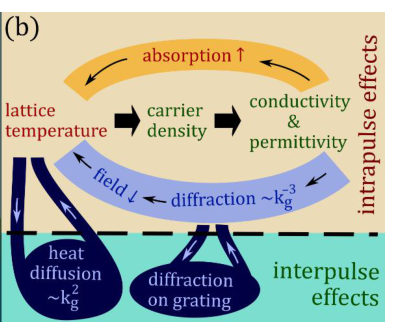
<figcaption class="paper-figure-caption"><b>Fig 1.</b> Figure 1. (a) Geometry of the problem: a linearly polarized electromagnetic wave, which is incident normally on a semiconductor surface and diffracts (𝛿𝐸±) and the periodic modulation of the medium permittivity, created by the carrier density modulation. 𝜆𝑔 is the spatial period of the modulation (the LIPSS period). (b) Physical picture of the thermal- ionization instability. The upper yellow loop shows the positive feedback: local overheating increases the carrier density and conductivity, which enhances the absorption and further increases the heating. The blue loops show the negative feedback: diffraction of the pump field on the permittivity modulation and on the surface corrugation...</figcaption>
</figure>
<figure class="paper-figure-card">

<figcaption class="paper-figure-caption"><b>Fig 2.</b> Figure 2. Normalized perturbation of electric field near the semiconductor surface, caused by diffraction, versus the perturbation wavenumber (the case of strong background medium ionization 𝜔𝑝</figcaption>
</figure>
<figure class="paper-figure-card">

<figcaption class="paper-figure-caption"><b>Fig 3.</b> Figure 3. Electric field near the semiconductor surface, normalized to the incident amplitude 𝐸𝑖𝑛𝑐. The results of numerical modelling for the case of strong medium ionization at 𝑘𝑔= 1.75 × 104 𝑐𝑚−1 are shown. (a) Map of the out-of-plane field component |𝐸𝑦</figcaption>
</figure>
<figure class="paper-figure-card">
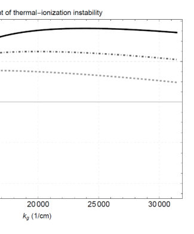
<figcaption class="paper-figure-caption"><b>Fig 4.</b> Figure 4. Calculated dependence of the thermal-ionization instability increment Ω (Eq. (46)) on the perturbation wavenumber 𝑘𝑔 for silicon at melting temperature (𝑘𝑇𝑙𝑎𝑡= 0.15 𝑒𝑉, 𝑣𝑑= 1.4 × 107𝑐𝑚/𝑠, 𝜈= 1015𝑠−1, 𝑏= 1.2 𝑀𝑉/𝑐𝑚, α0 = 4 × 105𝑐𝑚−1, 𝑊𝑔= 0.7 𝑒𝑉, 𝐷𝑙𝑎𝑡= 0.1 𝑐𝑚2/𝑠) and for the set of experimental parameters from Ref. [4] (𝜏𝑝= 20 𝑝𝑠, 𝜏𝑑= 37 𝑛𝑠, 𝜔= 5 𝑇𝐻𝑧). Solid, dot-dashed and dashed curves correspond to the incident field amplitudes of 3 MV/cm, 2.5 MV/cm and 2 MV/cm, respectively (which are the estimated amplitudes of micro- pulses with the fluences of 0.3, 0.2 and 0.12 J/cm2 in Ref. [4], respectively).</figcaption>
</figure>
<figure class="paper-figure-card">
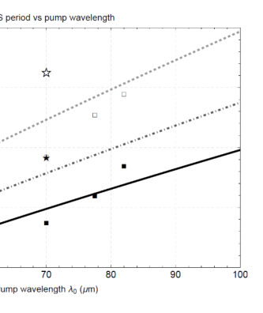
<figcaption class="paper-figure-caption"><b>Fig 5.</b> Figure 5. Predicted dependence of LIPSS period on the incident wavelength (Eq. (47)). The set of parameters is the same as in Fig. 4; solid, dot-dashed and dashed curves also correspond to the incident field amplitudes of 3 MV/cm, 2.5 MV/cm and 2 MV/cm, respectively. Squares, stars, and circles are the experimental points for the micro-pulse fluences of 0.3, 0.2 and 0.12 J/cm2 (or estimated field amplitudes of 3 MV/cm, 2.5 MV/cm and 2 MV/cm), respectively [adopted from Fig. 3 (a), Ref. [4]]. Filled symbols denote the center of the irradiated spot; open symbols denote the periphery.</figcaption>
</figure>
</div>

<p><strong>Summary.</strong> This work provides a comprehensive theory detailing how intense THz radiation can create subwavelength periodic structures in semiconductors. The mechanism hinges on a delicate balance between localized heating that enhances absorption and the wave diffraction that weakens the local electric field. The derived theory successfully predicts the observed spatial period of these structures based on fundamental material parameters.</p>
<p><strong>Why it may be interesting.</strong> The mechanism involves nonlinear coupling between electromagnetic fields, thermal dynamics, and carrier density, which touches upon non-equilibrium physics and pattern formation relevant to open quantum systems.</p>
<details>
<summary>Detailed structure</summary>
<p><strong>Main problem.</strong> The paper develops a theory to explain the formation of deeply subwavelength electromagnetic structures in semiconductors when subjected to intense, low-frequency electromagnetic pulses.</p>
<p><strong>Main result.</strong> The structuring arises from a competition between positive feedback (thermal runaway via ionization) and negative feedback (diffraction-induced field weakening), leading to an exponentially growing temperature perturbation with a specific wavenumber.</p>
<p><strong>Method.</strong> The theory combines semiconductor carrier dynamics (Drude model) with classical wave propagation and heat diffusion equations, solved using perturbation theory.</p>
<p><strong>Model / system.</strong> The system is a semiconductor surface irradiated by intense THz or mid-IR pulses. The physics is governed by the interplay between local heating/ionization (positive feedback) and the diffraction of the pump field (negative feedback).</p>
<p><strong>Key observables.</strong> Deeply subwavelength periodic structures (LIPSS) with spatial periods much smaller than the pump wavelength.</p>
<p><strong>Important parameters / regimes.</strong> Pump repetition rate, pump field intensity, thermal conductivity, and incident wavelength.</p>
<p><strong>Assumptions / limitations.</strong> The analysis relies on the competition between heat diffusion and diffraction, and the model is most accurate for low-frequency pumping regimes, with limitations noted for extremely high repetition rates involving irreversible lattice damage.</p>
<p><strong>Figures summary.</strong> Figure 1 illustrates the physical feedback loops (heating vs. diffraction). Figure 2 shows the normalized electric field perturbation vs. wavenumber, and Figure 3 maps the total electric field near the surface.</p>
<p><strong>Paper structure.</strong> The analysis is structured by examining the diffraction on permittivity perturbations, single-pulse heating, slow evolution/instability growth rate, and finally, the effects of surface corrugation.</p>
</details>
<details>
<summary>Abstract</summary>
<p>We develop a theory of ionization-assisted instability that governs the reflection of intense electromagnetic pulses from a semiconductor surface. Local overheating of the material increases the free-carrier density and conductivity, which in turn enhances the absorption of the incident radiation and further amplifies local heating and avalanche ionization. At high pump repetition rates, the overheating accumulates from pulse to pulse, leading to a gradual rise of the local material temperature and free carrier density - a positive feedback loop that drives thermal runaway. However, this effect competes with diffraction of the pump field on the emerging perturbation of the dielectric permittivity or on the surface relief, which reduces the local electric field amplitude in the overheated regions, thus providing negative feedback. We show that the competition between heat diffusion and diffraction near-field weakening creates conditions for the exponential growth of temperature perturbations with a certain wavenumber determined by the pulse repetition rate, pump field, thermal conductivity and other material parameters. The derived analytical expressions accurately describe the spatial period of deeply subwavelength structures observed in recent experiments on silicon structuring by intense terahertz radiation, and reproduce qualitatively dependencies of their period on the pump intensity, the incident wavelength and the number of pump pulses.</p>
</details>
<p><sub><a href="#top">↑ back to top</a></sub></p>

<p><a id="paper-2610.18418"></a></p>
<h3 id="the-role-of-dependency-range-in-thermally-coupled-superconducting-networks"><a href="http://arxiv.org/abs/2610.18418v1">The role of dependency range in thermally coupled superconducting networks</a></h3>
<p><strong>Authors:</strong> Nahala Yadid, Bnaya Gross, Shlomo Havlin, Nadav M. Shnerb<br>
<strong>Type:</strong> both · <strong>Category:</strong> statistical mechanics · <strong>PDF:</strong> <a href="https://arxiv.org/pdf/2610.18418v1">https://arxiv.org/pdf/2610.18418v1</a><br>
<strong>Analysis basis:</strong> full PDF text, analyzed in chunks
<strong>Topic relevance:</strong> <code>driven-dissipative phase transition</code> <strong>3/5</strong> · <code>non-equilibrium universality</code> <strong>3/5</strong> · <code>correlated / nonlocal dissipation</code> <strong>2/5</strong> · <code>methods for driven-dissipative</code> <strong>1/5</strong></p>
<div class="figure-strip-hint">↔ Scroll figures horizontally</div>
<div class="paper-figures-scroll">
<figure class="paper-figure-card">
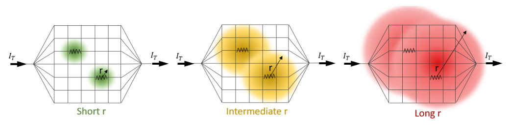
<figcaption class="paper-figure-caption"><b>Fig 1.</b> FIG. 1: A spatial network of amorphous superconducting segments. Current IT flows from left to right through the network. Each segment (i, j) of the 2d lattice represents a link (Resistively Shunted Josephson Junction, RSJJ), characterized by its own critical current value, Ic i,j(T). As temperature varies, a few segments may change their state from superconducting to normal and vice versa. Zigzag lines denote resistive (normal) segments that generate heat, which subsequently diffuses with diffusion constant D. The radius r = √</figcaption>
</figure>
<figure class="paper-figure-card">
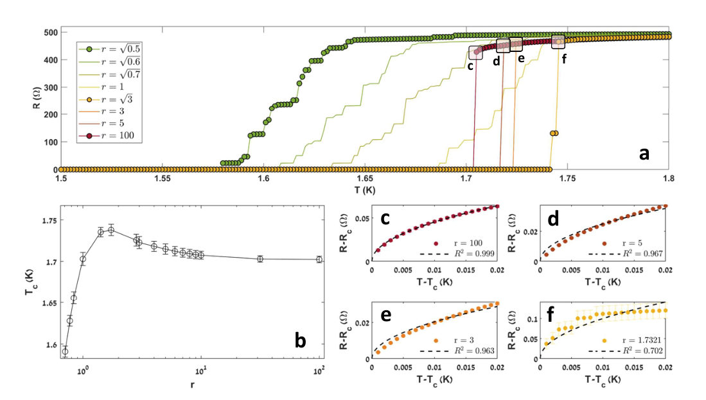
<figcaption class="paper-figure-caption"><b>Fig 2.</b> FIG. 2: Dependence of the superconducting transition on interaction range. (a) Resistance R(Ω) vs temperature T through the cooling process. The total resistance of the network is high at elevated temperatures, when all segments are normal. As the temperature decreases, some segments transition to the superconducting state, drawing current away from their neighbors and decreasing their temperature, thus increasing the likelihood that those segments will also enter the SC state. As the process progresses, more segments transition to the superconducting state, until eventually the total resistance drops to zero. The range of dependencies in the system is governed primarily by thermal...</figcaption>
</figure>
<figure class="paper-figure-card">

<figcaption class="paper-figure-caption"><b>Fig 3.</b> FIG. 3: Spontaneous cascading dynamics of the collapse at the critical temperature. The global resistance of a square network (L = 100) is plotted against simulation “time” (number of iterations), during the abrupt collapse, after cooling from the conducting state at T = 3K to the critical temperature. Panels (a) and (b) correspond to two of the dependency ranges considered in Fig. 2. Snapshots of the system are shown at the points (A–F) marked along each resistance curve. When the dependency length is intermediate (panel (a), r = √</figcaption>
</figure>
<figure class="paper-figure-card">
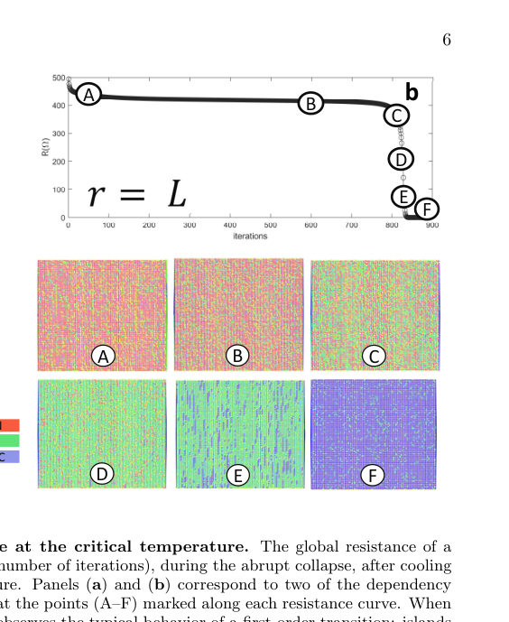
<figcaption class="paper-figure-caption"><b>Fig 4.</b> Fig. 3 indicates that, at least for the system consid-</figcaption>
</figure>
<figure class="paper-figure-card">
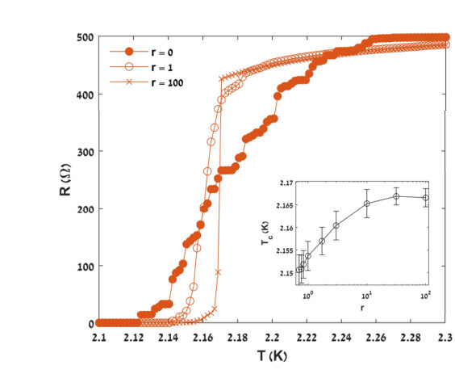
<figcaption class="paper-figure-caption"><b>Fig 5.</b> FIG. 4: Resistance vs. temperature through heating, for r = 0 (full circles), r = 1 (open circles), and very long range r = 100 (crosses). The three curves in the main panel are single representative realizations, one per r; the small step-like features they show are finite-size effects of individ- ual realizations. Averaging over many realizations, together with the other transition criteria and finite-size analysis, is presented in the inset and in the Supplementary Information. The network was initiated in its superconducting state (low T), and starts showing finite resistance when the giant com- ponent of SC links collapses. Interestingly, the network with long-range dependency is more...</figcaption>
</figure>
</div>

<p><strong>Summary.</strong> This paper examines superconducting networks where coupling arises from physical heat diffusion rather than abstract geometry. By modeling these thermally coupled systems, the authors demonstrate that long-range thermal interactions can stabilize the superconducting state upon heating, contradicting predictions from simpler geometric models. The findings offer a physically testable framework for understanding superconducting phase transitions in disordered materials.</p>
<p><strong>Why it may be interesting.</strong> The work provides a physically grounded mechanism for superconducting phase transitions, moving beyond abstract geometric assumptions by incorporating thermal dynamics, which is relevant for understanding non-equilibrium phase transitions in complex quantum materials.</p>
<details>
<summary>Detailed structure</summary>
<p><strong>Main problem.</strong> The study investigates how the physical mechanism of thermal coupling, which defines the dependency range, influences the stability and transition order of superconducting networks compared to idealized geometric models.</p>
<p><strong>Main result.</strong> Unlike geometric models, the physical heat-mediated coupling can stabilize the superconducting phase upon heating, and the critical temperature exhibits a non-monotonic dependence on the dependency range.</p>
<p><strong>Method.</strong> The authors use a resistively shunted Josephson junction model on a lattice, simulating heat diffusion to define the physical dependency range $r = \sqrt{Dt}$ and analyzing the resulting phase transitions.</p>
<p><strong>Model / system.</strong> The system is an amorphous superconducting network modeled by RSJJs on a 2D lattice, where interactions are governed by heat diffusion and current redistribution, allowing for reversible failure and recovery.</p>
<p><strong>Key observables.</strong> Superconducting critical temperature ($T_c$), total resistance ($R$) vs. Temperature ($T$), and the order of the phase transition (continuous, nucleation-dominated, mixed-order).</p>
<p><strong>Important parameters / regimes.</strong> Thermal diffusivity ($D$), dependency range ($r$), applied current ($I$), and system size ($L$).</p>
<p><strong>Assumptions / limitations.</strong> The analysis assumes the system can be modeled by RSJJs and that the heat-mediated dependency range $r$ is defined by thermal diffusion ($\sqrt{Dt}$).</p>
<p><strong>Figures summary.</strong> Figures illustrate the dependence of $R$ vs. $T$ curves and $T_c$ on the interaction range $r$, showing non-monotonic behavior and stabilization effects. Heat diffusion maps show the spread of influence.</p>
<p><strong>Paper structure.</strong> The paper contrasts physical heat-driven coupling with geometric models, analyzes the resulting transition regimes (continuous, nucleation, mixed-order), and quantifies the stabilization effect of long-range thermal coupling on $T_c$.</p>
</details>
<details>
<summary>Abstract</summary>
<p>Interdependent networks can be highly fragile because dependency links amplify local failures into cascades that trigger global collapse. Much of the theoretical understanding comes from geometric network models, where dependency range is imposed externally and coupling strength is distance independent, and it is unclear how these insights apply to real materials, where interdependence arises from physical transport. Here we study thermally coupled amorphous superconducting networks, in which dependencies emerge from current redistribution and heat-mediated interactions governed by thermal diffusivity. Using an experimentally calibrated model of resistively shunted Josephson junctions, we show the system reproduces the three canonical transition regimes: continuous, nucleation-dominated, and mixed-order. However, because heat-driven dependency simultaneously broadens and weakens with distance, long-range thermal coupling can stabilize the superconducting phase upon heating, in contrast with its destabilizing role in geometric models. Cascades are anisotropic, with one-dimensional front propagation. These results offer an experimentally testable perspective complementing the geometric framework.</p>
</details>
<p><sub><a href="#top">↑ back to top</a></sub></p>

<p><a id="paper-2610.18817"></a></p>
<h3 id="single-anyons-and-anyon-binding-in-a-quantum-hall-dot"><a href="http://arxiv.org/abs/2610.18817v1">Single anyons and anyon binding in a quantum Hall dot</a></h3>
<p><strong>Authors:</strong> Marco Valentini, Will Wang, Amir Shapour Mohammadi, Noah Samuelson, Chengxuan Li, Liam Cohen, Mark Zakharyan, Jiechao Feng, Taige Wang, Takashi Taniguchi, Kenji Watanabe, Michael P. Zaletel, Andrea F. Young<br>
<strong>Type:</strong> experiment · <strong>Category:</strong> strongly correlated electrons · <strong>PDF:</strong> <a href="https://arxiv.org/pdf/2610.18817v1">https://arxiv.org/pdf/2610.18817v1</a><br>
<strong>Analysis basis:</strong> full PDF text, analyzed in chunks
<strong>Topic relevance:</strong> <code>analog quantum simulation</code> <strong>3/5</strong> · <code>quantum measurements</code> <strong>2/5</strong> · <code>Full counting statistics</code> <strong>1/5</strong> · <code>QC/QI experiment</code> <strong>1/5</strong></p>
<div class="figure-strip-hint">↔ Scroll figures horizontally</div>
<div class="paper-figures-scroll">
<figure class="paper-figure-card">
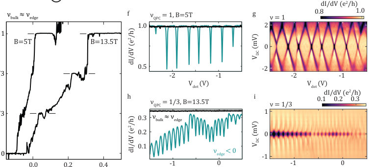
<figcaption class="paper-figure-caption"><b>Fig 1.</b> FIG. 1. Integer and fractional quantum Hall quantum dot. a, Device schematic. A monolayer graphene layer is encapsulated between hexagonal boron nitride dielectrics (not shown) and controlled by 7 field-effect gates in three vertical layers. A graphite bottom gate (at voltage VB) tunes the entire device. A top graphite gate (VT) is patterned using atomic force lithography[17] to form a QPC geometry consisting of a central top gate perforated by a hole of 90 nm diameter as well as north and south QPC control gates (Vqpc,N and Vqpc,S) (see atomic force micrograph, inset). Three aluminum finger gates are aligned over the hole (Vdot) and trenches (Vedge,N and Vedge,S) close to the dot....</figcaption>
</figure>
<figure class="paper-figure-card">

<figcaption class="paper-figure-caption"><b>Fig 2.</b> FIG. 2. Single quasihole-quasiparticle control in the integer regime. a, I/V as a function of VDC and Vdot under the same conditions as in Fig. 1g, but with Vedge = −3.5 V. b, Low-bias data acquired under the same conditions as in a. c, Schematic of the dot embedded in the QPC for Nqp &lt; 0 and d, Nqp &gt; 0. The left panels show a real-space diagram while the right panels show the energy as a function of y-coordinate across the QPC neck. Edge-to-dot tunneling is allowed for Nqp &lt; 0 but spin-blockaded for Nqp &gt; 0. e, High-bias data acquired under the same conditions as panel a for Nqp &gt; 0. f, Schematic of the dot embedded in the QPC for Nqp &gt; 0 and applied bias exceeding the Zeeman energy....</figcaption>
</figure>
<figure class="paper-figure-card">
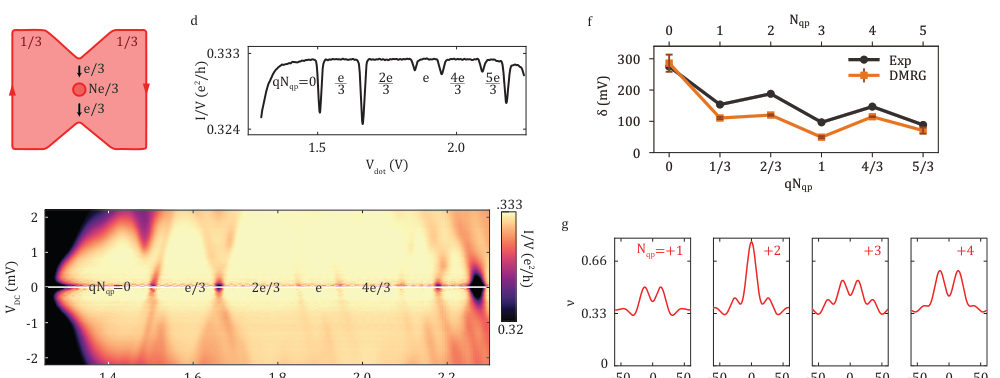
<figcaption class="paper-figure-caption"><b>Fig 3.</b> FIG. 3. Single anyon dot. a, dI/dV as a function of VDC and Vdot, measured at νbulk = 1/3. b, I/V with VDC = 100µV. The bracket indicates the span of the Nqp = 0 diamond for ν = 1 at B = 4.5 T. The range shows the expected position of the Nqp = 0; the range represents an error bar derived from our calibration of quantum capacitance effects. c, Schematic of backscattering via fractional Coulomb blockade of the dot. d, Detail of the conductance for low Nqp &gt; 0, with the charge sectors indicated. e, High-resolution I/V in the few quasiparticle regime. f, Spacing δ in the few-quasiparticle regime, measured experimentally (black) and calculated using DMRG (orange). g, Local filling-factor...</figcaption>
</figure>
<figure class="paper-figure-card">
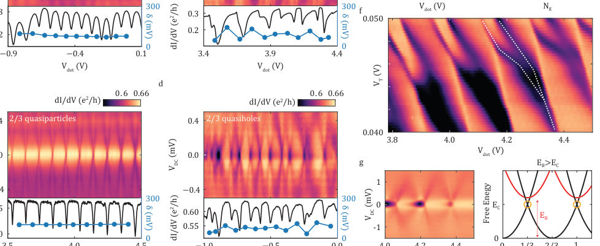
<figcaption class="paper-figure-caption"><b>Fig 4.</b> FIG. 4. Evidence for anyon attraction. Upper panels of a–d, dI/dV as a function of VDC and Vdot for dot filling factors νdot = 1/3 (a, c) and νdot = 2/3 (b, d). Panels a and d correspond to the quasihole regime, whereas b and c correspond to the quasiparticle regime. The lower panels show linecuts taken at VDC = 0 of the corresponding upper panels (black traces) and the relative δ spacings (blue trace). Panels a and b exhibit regularly spaced Coulomb diamonds and resonances, whereas c and d exhibit irregular spacings and an alternation between small and large diamonds, indicative of an even–odd effect. e, Left panel, Zoomed-in view of the even–odd effect in the ν = 1/3 quasiparticle regime...</figcaption>
</figure>
</div>

<p><strong>Summary.</strong> This work experimentally demonstrates the ability to trap and study single anyons in a quantum Hall dot realized in graphene. By measuring the charge addition spectrum, the researchers observed evidence of an attractive inter-anyon interaction, quantifying an anyon binding energy comparable to the charging energy. This advances the field by moving beyond ensemble measurements to probe single-anyon physics.</p>
<p><strong>Why it may be interesting.</strong> The study provides experimental evidence for fractionalized excitations (anyons) and measures an interaction energy scale (anyon binding energy) in a solid-state system, which is a key goal in topological quantum computation.</p>
<details>
<summary>Detailed structure</summary>
<p><strong>Main problem.</strong> The research aims to demonstrate the trapping of a single anyon and study the associated anyon binding energy in a controlled quantum Hall dot system.</p>
<p><strong>Main result.</strong> The authors observed a regular addition spectrum for quasiholes at 1/3 (and quasiparticles at 2/3) while the reverse did not, indicating an attractive inter-anyon interaction leading to an anyon binding energy comparable to the charging energy.</p>
<p><strong>Method.</strong> Transport measurements (dI/dV) were performed on a graphene-based quantum point contact coupled to a tunable quantum Hall dot, analyzing fractional charge tunneling and Coulomb blockade physics.</p>
<p><strong>Model / system.</strong> The physical platform is a graphene quantum dot embedded in a quantum Hall system, allowing the study of fractional excitations (anyons) in a topologically ordered insulator. The system is analyzed using concepts from fractional quantum Hall physics and correlated electron models.</p>
<p><strong>Key observables.</strong> Quantized conductance plateaus, backscattering resonance periodicity ($\delta$), charge addition energies, and the suppression of alternating charge sectors.</p>
<p><strong>Important parameters / regimes.</strong> Fractional fillings ($
u=1, 1/3, 2/3$), magnetic fields ($B=5    ext{ T}, 13.5   ext{ T}$), and the ratio of inter-anyon interaction to charging energy.</p>
<p><strong>Assumptions / limitations.</strong> The analysis assumes that the observed periodicities and energy gaps are directly related to the fundamental fractional charge carriers (anyons) and their interactions.</p>
<p><strong>Figures summary.</strong> Figures illustrate device schematics, edge mode physics, and transport measurements showing quantized plateaus and periodic conductance dips corresponding to fractional charge tunneling.</p>
<p><strong>Paper structure.</strong> The paper progresses from establishing the physical setup and confirming fractional edge state quantization ($
u=1/3$) to demonstrating controlled single-anyon trapping, and finally analyzing the addition energy spectrum to quantify the anyon binding energy.</p>
</details>
<details>
<summary>Abstract</summary>
<p>Anyons are particles with quantized fractional statistics. In theory, a single anyon can be stabilized as a localized fractional charge within the bulk of a topologically ordered two-dimensional insulator. However, experiments to date have focused on probing anyons in structures in which many anyonic excitations coexist and interact. Here, we demonstrate the trapping of a single anyon in a device consisting of a graphene-based quantum point contact with an embedded tunable quantum Hall dot. Benchmarking our device at v = 1, we demonstrate backscattering between Fermi liquid edge states mediated by the whole-electron Coulomb blockade of the dot. The cleanliness and control available in our device allow depletion of the dot to the last quasihole, and we observe spin blockade for transitions to the opposite-spin Landau level. At v = 1/3 and 2/3, we observe backscattering resonances with three times the frequency, consistent with resonant transmission of e/3 charges via a single anyon transistor. We demonstrate controlled depletion to the last quasiparticle to form a single anyon quantum dot. Tracing the charge addition spectrum for quasiparticle number Nqp = 1-5, we observe highly irregular addition energies, consistent with DMRG modeling showing a complex orbital shell-filling behavior. At higher Nqp = 10-20, the addition energies show a striking pattern: quasiholes at 1/3 (and quasiparticles at 2/3) show a regular addition spectrum while quasiparticles at 1/3 (and quasiholes at 2/3) do not. We trace the origin of this irregularity to an attractive component of the inter-anyon interaction: by experimentally tuning the confining energy, we observe complete suppression of alternating charge sectors, after which the dot charges in increments of twice the fundamental charge. This observation indicates the emergence of an anyon binding energy as large as the charging energy.</p>
</details>
<p><sub><a href="#top">↑ back to top</a></sub></p>

<p><a id="paper-2610.18800"></a></p>
<h3 id="spin-textures-at-the-fermi-surface-of-ferromagnets-and-associated-torque"><a href="http://arxiv.org/abs/2610.18800v1">Spin textures at the Fermi surface of ferromagnets and associated torque</a></h3>
<p><strong>Authors:</strong> T. Valet, J. Li, H. Jaffrès, V. Cros, M. Chshiev, R. Raimondi<br>
<strong>Type:</strong> both · <strong>Category:</strong> other · <strong>PDF:</strong> <a href="https://arxiv.org/pdf/2610.18800v1">https://arxiv.org/pdf/2610.18800v1</a><br>
<strong>Analysis basis:</strong> full PDF text, analyzed in chunks
<strong>Topic relevance:</strong> <code>Keldysh / 2PI / non-Gaussian methods</code> <strong>3/5</strong> · <code>methods for driven-dissipative</code> <strong>2/5</strong> · <code>analog quantum simulation</code> <strong>1/5</strong> · <code>quantum measurements</code> <strong>1/5</strong></p>
<div class="figure-strip-hint">↔ Scroll figures horizontally</div>
<div class="paper-figures-scroll">
<figure class="paper-figure-card">

<figcaption class="paper-figure-caption"><b>Fig 1.</b> FIG. 1. Spin mosaics of Fe, Co and Ni. We show here pairs of Fermi surfaces, which intersect in the absence of SOI, and carry the strongest transverse spin texture: in bcc Fe with the magnetization direction m along [100] i.e., (a) Σ1↓and (b) ∆2′↑; in hcp Co with m along [0001] i.e., (c) R1,2↓and (d) Σ1↑; in fcc Ni with m along [111] i.e., (e) Σ2↓and (f) Σ1↑. Each surface is named after its dominant “parent” band before reconnection, in the notation of Ref. [33] for Fe and Ni and of Ref. [34] for Co, and is drawn inside the first Brillouin zone. The red tint, on the majority tiles, and blue tint, on the minority ones, give the spin polarization along m. It fades to white at the seams, where...</figcaption>
</figure>
<figure class="paper-figure-card">

<figcaption class="paper-figure-caption"><b>Fig 2.</b> FIG. 2. Reconnection of the Fermi surfaces and transverse spin texture of fcc Ni, in two cut-planes perpendicular to m ∥ [111]: (a) the plane through Γ, at an isolated crossing, the panel centered at the wave vector (−0.54, 0.98, −0.43) ˚A−1; (b) the plane at −0.80 ˚A−1 from Γ along m, through the point of largest transverse spin polarization in Ni, the panel cen- tered at (−0.04, −0.06, −1.29) ˚A−1. Dashed lines: the Fermi lines without SOI, majority in red and minority in blue. Full lines: the Fermi lines with SOI, with the tint of Fig. 1 for the spin polarization along m. Arrows: the transverse spin polarization.</figcaption>
</figure>
<figure class="paper-figure-card">

<figcaption class="paper-figure-caption"><b>Fig 3.</b> FIG. 4. Ni layer thickness dependence of the damping-like torque efficiency, for a series of Ni(t)/Ti(8 nm) bilayers mea- sured in Ref. [16] (open circles, data extracted from Fig. 2d therein), and computed from our model of intraband current- gradient-induced torque (red and blue dots at the computed thicknesses, with the continuous lines as guides to the eye).</figcaption>
</figure>
<figure class="paper-figure-card">
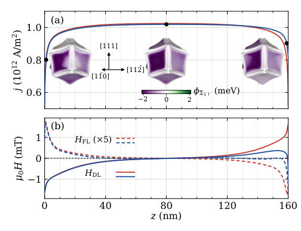
<figcaption class="paper-figure-caption"><b>Fig 4.</b> FIG. 3. Current density and effective field, in a 160 nm thick (111) fcc Ni film with m and E along [1¯10], for an average current density of 1012 A/m2. Red lines: p = 0 at bottom and top. Blue lines: p = 0 at bottom and p = 0.5 at top. (a) Current density profiles; and, for the asymmetric film, insets with the deviation ϕΣ1↑on the Σ1↑Fermi surface, at 1 nm from the bottom, at the center and at 1 nm from the top (black dots). The triad of crystal axes defines the viewpoint. (b) The effective field components, damping-like, HDL along [111], and field-like, HFL(×5) along [11¯2].</figcaption>
</figure>
</div>

<p><strong>Summary.</strong> This paper theoretically predicts that spin-orbit interaction induces transverse spin textures at the Fermi surface of centrosymmetric ferromagnets. These textures give rise to a novel current-gradient-induced Spin-Orbit Torque (SOT). The model successfully reproduces experimental measurements on Ni bilayers, opening a new pathway for electrical control of magnetic order.</p>
<p><strong>Why it may be interesting.</strong> While primarily condensed matter magnetism, the detailed quantum kinetic theory and the focus on emergent, symmetry-protected torques provide a deep theoretical framework for understanding spin-charge coupling, which is relevant to open quantum systems dynamics.</p>
<details>
<summary>Detailed structure</summary>
<p><strong>Main problem.</strong> The paper theoretically establishes the existence of transverse spin textures at the Fermi surface of centrosymmetric ferromagnets and predicts a novel current-gradient-induced Spin-Orbit Torque (SOT) arising from these textures.</p>
<p><strong>Main result.</strong> A current-gradient-induced SOT is predicted that is distinct from torques associated with broken inversion symmetry, and its magnitude quantitatively agrees with measurements on Ni-based bilayers previously attributed to orbital torques.</p>
<p><strong>Method.</strong> The work combines theoretical derivations using a two-band model near band intersections with <em>ab initio</em> computations (VASP) and solving the semiclassical Boltzmann equation.</p>
<p><strong>Model / system.</strong> The study focuses on centrosymmetric ferromagnetic metals (Fe, Co, Ni) and their electronic structure near the Fermi surface, utilizing a two-band model to analyze spin-orbit interaction effects.</p>
<p><strong>Key observables.</strong> Transverse spin texture ($s^{\perp}$), current-gradient-induced torque ($ au^E_{  ext{ib}}$), and the damping-like torque efficiency ($\xi_{E  ext{DL}}$).</p>
<p><strong>Important parameters / regimes.</strong> The thickness ($t$) of the Ni-based bilayers, and the strength of the spin-orbit interaction (SOI).</p>
<p><strong>Assumptions / limitations.</strong> The analysis relies on a two-band theory assuming other bands are energetically distant, and the torque derivation is performed at the leading order in the semiclassical expansion.</p>
<p><strong>Figures summary.</strong> Figures illustrate spin mosaics showing transverse spin textures at Fermi surface seams (Fig. 1, 2), and show current density profiles and the thickness dependence of the damping-like torque efficiency ($\xi_{E	ext{DL}}$) compared to experiments (Fig. 3, 4).</p>
<p><strong>Paper structure.</strong> The paper progresses from establishing the theoretical origin of transverse spin textures via SOI in centrosymmetric ferromagnets, deriving the current-gradient-induced torque, and finally validating this prediction by comparing the calculated torque dependence on film thickness with experimental measurements on Ni bilayers.</p>
</details>
<details>
<summary>Abstract</summary>
<p>We establish theoretically that transverse spin textures are generically induced by the spin-orbit interaction at the Fermi surface of centrosymmetric ferromagnetic metals. We confirm this prediction with {\em ab initio} computations for Fe, Co and Ni. By symmetry, this cannot be associated with spin-orbit torques under a uniform current. However, a new {\em current-gradient-induced} torque emerges in nanoscale geometries. For a series of Ni-based bilayers, the computed Ni thickness dependence of the current-gradient-induced torque is in quantitative agreement with measurements previously attributed to orbital torques. We discuss how this opens a new avenue for the electrical control of magnetic orders, possibly also including the Néel vector of metallic altermagnets.</p>
</details>
<p><sub><a href="#top">↑ back to top</a></sub></p>

<p><a id="paper-2610.18224"></a></p>
<h3 id="zeeman-spin-quantum-geometry-and-intrinsic-gyrotropic-spin-current"><a href="http://arxiv.org/abs/2610.18224v1">Zeeman spin quantum geometry and intrinsic gyrotropic spin current</a></h3>
<p><strong>Authors:</strong> Srijan Chatterjee, Tarun Kanti Ghosh<br>
<strong>Type:</strong> theory · <strong>Category:</strong> other · <strong>PDF:</strong> <a href="https://arxiv.org/pdf/2610.18224v1">https://arxiv.org/pdf/2610.18224v1</a><br>
<strong>Analysis basis:</strong> full PDF text, analyzed in chunks
<strong>Topic relevance:</strong> <code>Keldysh / 2PI / non-Gaussian methods</code> <strong>3/5</strong> · <code>methods for driven-dissipative</code> <strong>3/5</strong> · <code>quantum measurements</code> <strong>1/5</strong></p>
<div class="figure-strip-hint">↔ Scroll figures horizontally</div>
<div class="paper-figures-scroll">
<figure class="paper-figure-card">
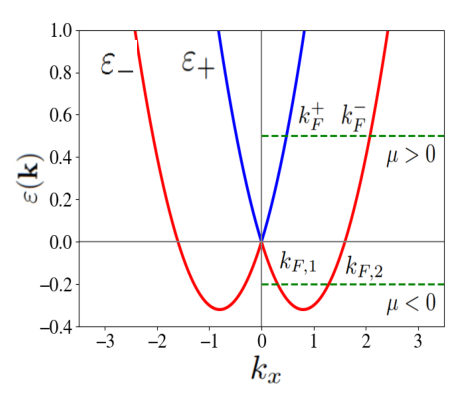
<figcaption class="paper-figure-caption"><b>Fig 1.</b> FIG. 1. Energy dispersion of the 2D electron gas with Rashba and Dresselhaus spin-orbit coupling, along the kx direction (ϕ = 0). Here kx is in units of k0 = mγ/ℏ2 and ε(k) is in units of ε0 = mγ2/ℏ2, where γ is the spin-orbit coupling energy scale.</figcaption>
</figure>
<figure class="paper-figure-card">
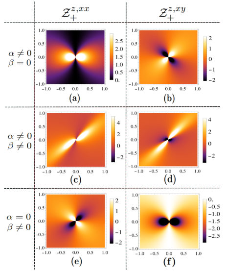
<figcaption class="paper-figure-caption"><b>Fig 2.</b> FIG. 2. The k-space distribution of the local intrinsic gy- rotropic spin current, induced by the Zeeman spin Berry cur- vature in units of ℏ2/(4mk0), for (a), (b): pure Rashba case, (c), (d): anisotropic Rashba-Dresselhaus case and (e), (f): pure Dresselhaus case, for the upper energy band.</figcaption>
</figure>
<figure class="paper-figure-card">

<figcaption class="paper-figure-caption"><b>Fig 3.</b> FIG. 3. The amplitude of the IGSC, Sl,ab 0 = Sl,ab(t)/ sin ωt as a function of the chemical potential for (a) α &gt; β (b) α = β (c) α &lt; β, respectively. The blue curves represent the longitudinal component while the red ones represent the transverse component of IGSC. In (a) α is fixed at 1.0 while β is varied from 0 to 0.9, resulting in a spectrum of ten curves for each component when µ &lt; 0, which collapses to a constant at µ &gt; 0. Similarly in (c) β is fixed at 1.0, while α is varied from 0 to 0.9, yielding results complementary to (a). Here α and β are in units of γ = 0.1 eV ˚A and Sl,ab 0 is plotted in units of gµBℏω/(8πγ), with µ in terms of ε0.</figcaption>
</figure>
</div>

<p><strong>Summary.</strong> This work theoretically derives an intrinsic gyrotropic spin current (IGSC) in a 2DEG model subjected to an oscillating magnetic field. The effect arises from the spin geometry (Zeeman quantum geometry) and is analyzed using the density matrix formalism. The key finding is that the spin and charge currents are perpendicular, opening pathways for pure spin current spintronics.</p>
<p><strong>Why it may be interesting.</strong> The explicit derivation of spin currents from geometric properties (Berry curvature/metric) in a clean limit framework provides a powerful theoretical tool applicable to understanding spin transport in condensed matter systems, which is relevant to open quantum systems dynamics.</p>
<details>
<summary>Detailed structure</summary>
<p><strong>Main problem.</strong> The paper uncovers an intrinsic gyrotropic spin current (IGSC) driven solely by an oscillating magnetic field, originating from the spin version of Zeeman quantum geometry.</p>
<p><strong>Main result.</strong> The spin and charge currents are found to be perpendicular for certain parameter ranges, and the IGSC can open pure spin current channels for energy-efficient spintronics.</p>
<p><strong>Method.</strong> The IGSC is derived using the density matrix formalism, employing the Zeeman spin quantum metric and the Zeeman spin Berry curvature in the low-frequency clean limit.</p>
<p><strong>Model / system.</strong> The study uses a two-dimensional electron gas (2DEG) model incorporating Rashba and Dresselhaus spin-orbit coupling (SOC) and subjected to an oscillating magnetic field.</p>
<p><strong>Key observables.</strong> Intrinsic Gyrotropic Spin Current (IGSC), local spin conductivity components (Z_z^{\pm}), and the relative phase shift ($\pi/2$) between spin and charge currents.</p>
<p><strong>Important parameters / regimes.</strong> The relative strengths of Rashba ($\alpha$) and Dresselhaus ($eta$) SOC interactions, and the chemical potential ($\mu$) regime ($\mu > 0$ vs $\mu < 0$).</p>
<p><strong>Assumptions / limitations.</strong> The analysis is performed in the low-frequency clean limit, and approximations are made regarding the energy scales ($\hbar\omega \ll \epsilon_{mn}$).</p>
<p><strong>Figures summary.</strong> Figure 1 shows the energy dispersion relation; Figure 2 illustrates the k-space distribution of the local intrinsic gyrotropic components; Figure 3 plots the amplitude of the IGSC versus the chemical potential $\mu$.</p>
<p><strong>Paper structure.</strong> The paper systematically derives the IGSC using the density matrix formalism, analyzes its dependence on SOC parameters ($\alpha, eta$) and chemical potential ($\mu$), and compares the resulting spin and charge current behaviors.</p>
</details>
<details>
<summary>Abstract</summary>
<p>We uncover an intrinsic gyrotropic spin current (IGSC) driven solely by an oscillating magnetic field, arising from the spin version of Zeeman quantum geometry. Using the density matrix formalism, we derive the IGSC in the low-frequency clean limit, in terms of the Zeeman spin quantum metric and the Zeeman spin Berry curvature. The effect is studied in a minimal Rashba-Dresselhaus model that also supports intrinsic gyrotropic charge currents from the Zeeman Berry curvature. The spin and charge currents exhibit a $π/2$ phase shift and are found to be perpendicular to each other for certain parameter ranges. This not only enables spin current detection but also opens pure spin current channels for energy-efficient spintronics. We further observe that these currents switch directions between longitudinal and transverse relative to the applied field, depending on the relative strength of Rashba and Dresselhaus interactions.</p>
</details>
<p><sub><a href="#top">↑ back to top</a></sub></p>

<p><a id="paper-2610.18116"></a></p>
<h3 id="chirality-inversion-and-giant-optical-activity-in-scalable-self-assembled-metamaterials"><a href="http://arxiv.org/abs/2610.18116v1">Chirality Inversion and Giant Optical Activity in Scalable Self-Assembled Metamaterials</a></h3>
<p><strong>Authors:</strong> Antonio Carone, Aso Rahimzadegan, Birgül Kalkan, Thomas G. Parton, Tony Jin, Zihao Lu, Clemens Schmitt, Emeline Raguin, Bruno Frka-Petesic, Kevin Vynck, Silvia Vignolini<br>
<strong>Type:</strong> both · <strong>Category:</strong> other · <strong>PDF:</strong> <a href="https://arxiv.org/pdf/2610.18116v1">https://arxiv.org/pdf/2610.18116v1</a><br>
<strong>Analysis basis:</strong> full PDF text, analyzed in chunks
<strong>Topic relevance:</strong> <code>interference shaping light</code> <strong>3/5</strong></p>
<div class="figure-strip-hint">↔ Scroll figures horizontally</div>
<div class="paper-figures-scroll">
<figure class="paper-figure-card">
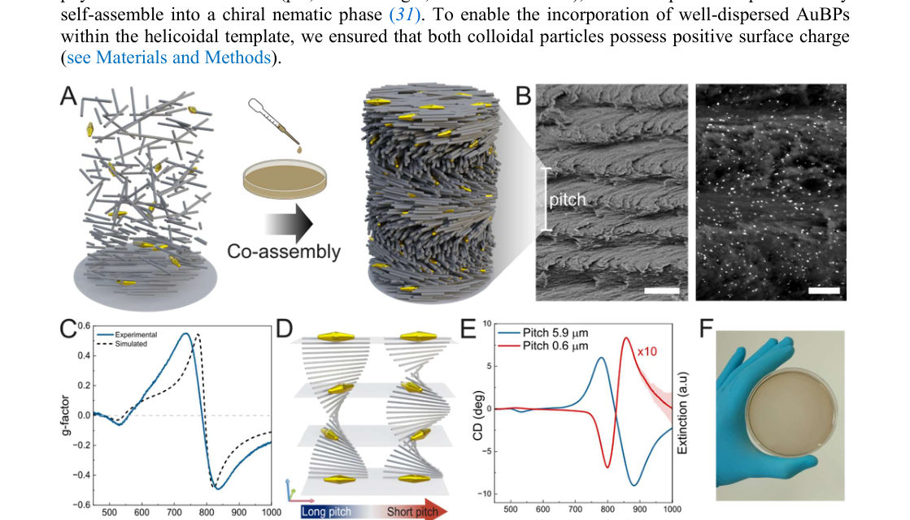
<figcaption class="paper-figure-caption"><b>Fig 1.</b> Figure 1. Preparation, structure, and chiroptical properties of the plasmonic films. (A) Schematic illustration of film fabrication composed of chitin nanocrystals (ChNCs) and gold bipyramids (AuBPs).</figcaption>
</figure>
<figure class="paper-figure-card">

<figcaption class="paper-figure-caption"><b>Fig 2.</b> Figure 2. Tomographic reconstruction. (A) Schematic representation of the section of the film analyzed by FIB-SEM (overlay not to scale). Scale bar 10 µm. (B) Tomographic reconstruction from FIB-SEM of the AuBPs color-coded by their azimuthal angle (φ). The AuBPs are represented as rods with coordinates (x, y, z) and orientation (θ, φ). Axes are in μm. (C) Polar angle (θ) distribution for the AuBPs in the tomographic dataset, including angle distributions simulated using different S2 order parameters. (D) Correlation diagram of the z position of AuBPs and their angle φ obtained from the tomographic reconstruction. The dotted line represents the expected trend for a left-handed distribution...</figcaption>
</figure>
<figure class="paper-figure-card">

<figcaption class="paper-figure-caption"><b>Fig 3.</b> Figure 3. Geometrical and chiroptical analysis. (A) Schematic of the Helicoidal Model. (B) Mean geometrical chirality index (χ̄ geom) versus inverse pitch and particle density. The heatmap shows simulated left- and right-handed configurations in blue and red, respectively; square symbols show experimental circular dichroism (CD), color-coded by CD value. (C) Representative experimental (solid) and simulated (dashed) CD spectra for selected phase-diagram regions. Blue and red spectra show left- and right-handed bisignate signals; gray spectra show a left-handed Cotton effect. Each simulated spectrum is the average of 50 disorder realizations containing 1000 AuBPs. (D) Simulated chiroptical...</figcaption>
</figure>
<figure class="paper-figure-card">

<figcaption class="paper-figure-caption"><b>Fig 4.</b> Figure 4. Tunability and recovery of the gold particles. (A to C) CD (solid curves) and normalized extinction (dashed curves) spectra of films containing gold particles with aspect ratios of 2.2 (A), 1.8 (B), and approximately 1.0 (C). Panel C shows nearly spherical particles. (D) Schematic of the film disassembly and gold-colloid recovery process. (E) Normalized extinction spectra of AuBPs before assembly and after recovery. Tunability and recovery of colloidal Au nanoparticles The inclusion of plasmonic particles largely determines the chiral optical properties of the metamaterial. We therefore varied their aspect ratio to tune the position of the spectral response. The co-assembly...</figcaption>
</figure>
</div>

<p><strong>Summary.</strong> This work presents a scalable method to create highly chiral metamaterials by assembling gold nanoparticles within a chitin matrix into helicoidal structures. The research achieves strong optical activity and demonstrates a key finding: the optical handedness can be inverted simply by changing the structure's pitch, independent of the template's inherent chirality. This advances the field toward sustainable and tunable plasmonic photonics.</p>
<p><strong>Why it may be interesting.</strong> The ability to decouple geometrical chirality from optical chirality by tuning the pitch is a powerful concept for designing metamaterials, offering a tunable knob for controlling optical responses in a highly structured, solid-state platform.</p>
<details>
<summary>Detailed structure</summary>
<p><strong>Main problem.</strong> The primary challenge addressed is developing a scalable method to produce chiral materials exhibiting strong and reproducible optical activity.</p>
<p><strong>Main result.</strong> The authors successfully demonstrated a scalable assembly strategy yielding high optical activity and, crucially, showed the ability to invert the optical handedness by tuning the structural pitch without altering the template's inherent chirality.</p>
<p><strong>Method.</strong> The study combines experimental techniques like 3D tomography (FIB-SEM) and Circular Dichroism (CD) spectroscopy with advanced theoretical modeling using T-matrix electromagnetic simulations.</p>
<p><strong>Model / system.</strong> The physical system consists of metallic nanoparticles (gold bipyramids) assembled into hierarchical helicoidal metamaterials using a biosourced chitin nanocrystal template. The analysis involves modeling the particle arrangement using helicoidal and disordered point processes.</p>
<p><strong>Key observables.</strong> Dissymmetry factor (g-factor), Complex Chiroptical Index (chi_eng or chi_ang), helicoidal pitch, and CD spectra.</p>
<p><strong>Important parameters / regimes.</strong> Helicoidal pitch (tunable from hundreds of nm to several $\mu$m), particle density ($
ho$), and the dihedral angle ($\Delta\phi$).</p>
<p><strong>Assumptions / limitations.</strong> The chitin matrix is treated as an effective homogeneous medium, and the T-matrix calculation for individual nanoparticles uses an electric dipole approximation.</p>
<p><strong>Figures summary.</strong> Figures illustrate schematic fabrication, cross-sections, simulated/experimental g-factor vs. pitch, and correlation diagrams showing the left-handed helical arrangement of AuBPs guided by the chitin matrix.</p>
<p><strong>Paper structure.</strong> The paper progresses from establishing the need for scalable chiral materials, detailing the co-assembly process, quantifying the structural chirality via tomography, and finally linking the structural parameters (pitch, density) through complex electromagnetic simulations (T-matrix) to the measurable optical response (CD/g-factor).</p>
</details>
<details>
<summary>Abstract</summary>
<p>Chiral materials manipulate light in ways that hold promise for sensing, imaging, and photonics, but producing such materials with strong and reproducible optical activity at large scale remains challenging. Here, we develop a scalable strategy to assemble hierarchical helicoidal metamaterials from metallic nanoparticles and chitin nanocrystals, a biosourced polysaccharide. Spontaneous co-assembly produces ordered chiral structures with strong plasmonic optical activity, reaching a dissymmetry factor of 0.55. The unprecedented ability to vary the helicoidal pitch allows control of the optical response, enabling inversion of optical handedness without changing the handedness of the template, effectively decoupling geometrical chirality from optical chirality. Remarkably, the gold nanoparticles can also be recovered from dry films and redispersed as colloids, introducing an appealing circularity concept for sustainable chiral plasmonic materials.</p>
</details>
<p><sub><a href="#top">↑ back to top</a></sub></p>

<p><a id="paper-2610.18297"></a></p>
<h3 id="a-topological-spin-on-racetrack-memory"><a href="http://arxiv.org/abs/2610.18297v1">A Topological Spin on Racetrack Memory</a></h3>
<p><strong>Authors:</strong> Benjamin Zingsem<br>
<strong>Type:</strong> theory · <strong>Category:</strong> other · <strong>PDF:</strong> <a href="https://arxiv.org/pdf/2610.18297v1">https://arxiv.org/pdf/2610.18297v1</a><br>
<strong>Analysis basis:</strong> full PDF text, analyzed in chunks
<strong>Topic relevance:</strong> <code>Keldysh / 2PI / non-Gaussian methods</code> <strong>2/5</strong> · <code>analog quantum simulation</code> <strong>2/5</strong> · <code>driven-dissipative phase transition</code> <strong>2/5</strong> · <code>methods for driven-dissipative</code> <strong>2/5</strong> · <code>non-equilibrium universality</code> <strong>2/5</strong> · <code>Frenkel-Kontorova</code> <strong>1/5</strong> · <code>quantum measurements</code> <strong>1/5</strong> · <code>scars &amp; prethermalization</code> <strong>1/5</strong></p>
<div class="figure-strip-hint">↔ Scroll figures horizontally</div>
<div class="paper-figures-scroll">
<figure class="paper-figure-card">
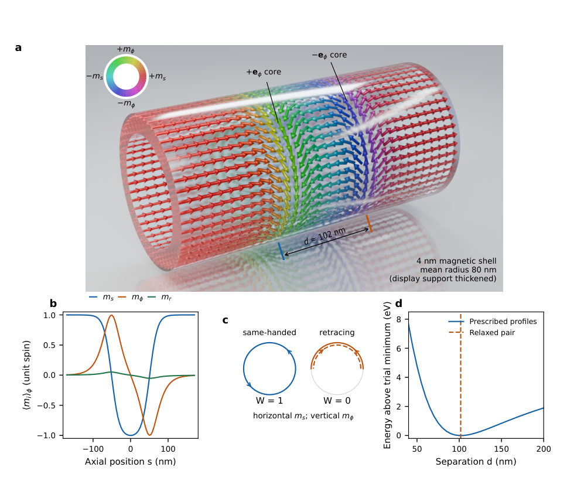
<figcaption class="paper-figure-caption"><b>Fig 1.</b> Figure 1: A bound 360° domain wall in a hollow magnetic tube. a, Same-handed 360° domain wall (DW): two successive 180° reversals return to the same axial background. The local unit vectors es, eϕ and er point along the tube, around its circumference and outward; ms, mϕ, mr are the corresponding unit-spin components. Hue follows the displayed tangent-angle wheel. The transparent support is thick- ened for visibility; the reference magnetic shell is 4 nm thick. b, Azimuthal means of the saved relaxed mid-shell components, all on the full [−1, 1] scale. c, Directions traced by the magnetization while moving along an axial line at fixed ϕ: projected winding W = (2π)−1 H d[arg(ms + imϕ)] is one...</figcaption>
</figure>
<figure class="paper-figure-card">
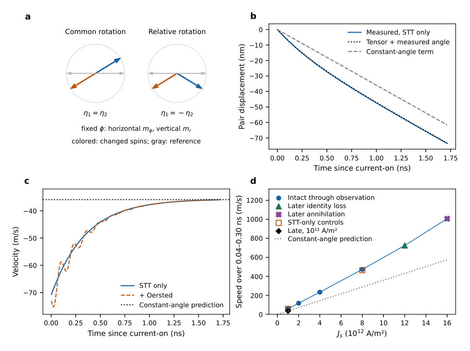
<figcaption class="paper-figure-caption"><b>Fig 2.</b> Figure 2: Relative spin rotation contributes to translation. a, Schematic constituent spins at fixed ϕ. Gray arrows show reference core directions; blue and orange arrows show changed spins in the (mϕ, mr) plane. Common and opposite helicity changes are rotations relative to the local frame, not rigid rotation of the whole axisymmetric field. b, Measured periodic-pair displacement at Js = 1012</figcaption>
</figure>
<figure class="paper-figure-card">
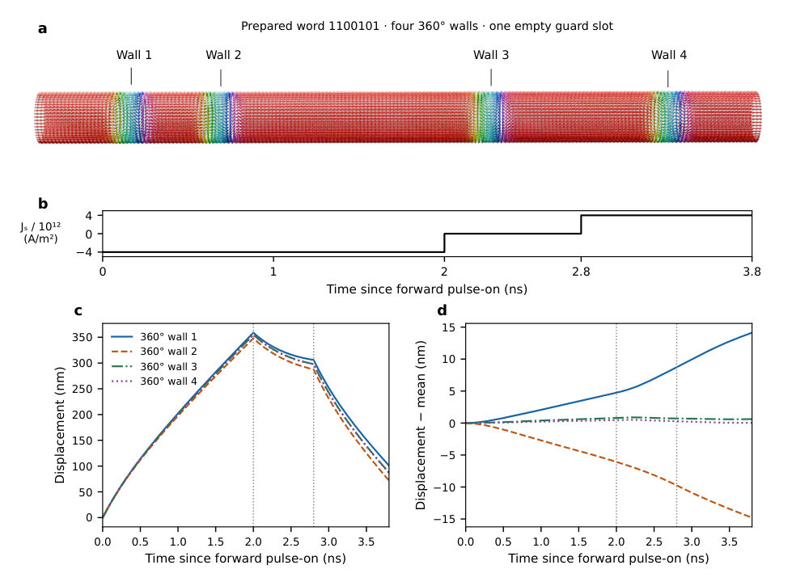
<figcaption class="paper-figure-caption"><b>Fig 3.</b> Figure 3: A prepared information pattern moves forward, recovers and reverses. a, Actual initial magnetization of four 360° DWs encoding 11001012 = 10110 in seven data slots, with an eighth empty guard slot between periodic copies. The track has no physical end faces at the displayed limits. Spin hue follows Fig. 1. Labels identify the four 360° walls occupying the ‘1’ slots. The nominal pitch is 384 nm. b, Applied conventional-current protocol: −4 × 1012 A/m2 for 2 ns, zero current for 0.8 ns, then +4 × 1012 A/m2 for 1 ns. The reverse phase starts from the exact recovered checkpoint, without relaxation or minimization. c, Independently tracked, unwrapped displacements of all four textures....</figcaption>
</figure>
<figure class="paper-figure-card">
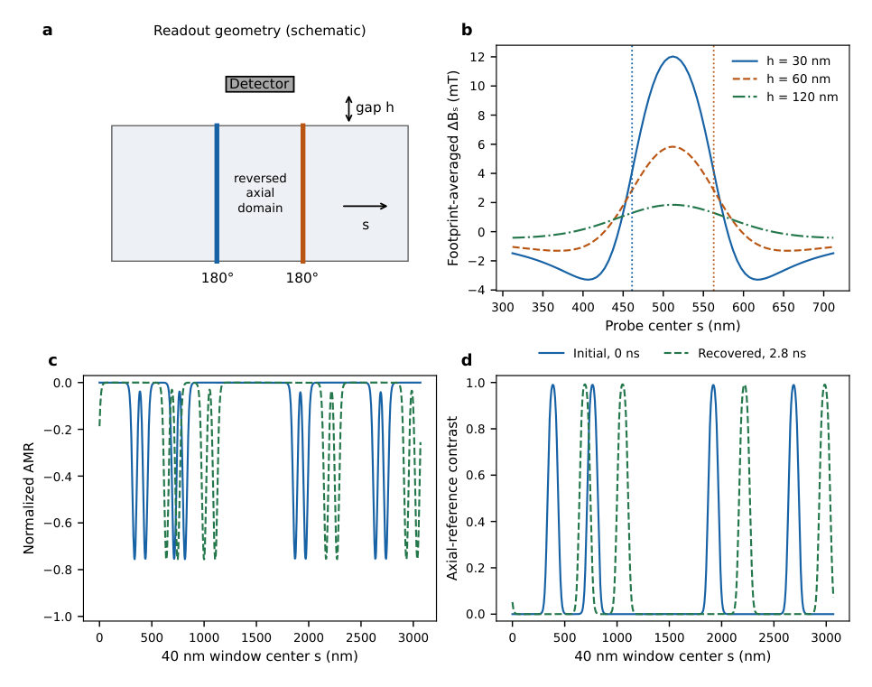
<figcaption class="paper-figure-caption"><b>Fig 4.</b> Figure 4: The simulated carrier provides local magnetic and resistive contrast. a, Schematic axial view of the two constituent walls and an external detector. The surface gap is h; the footprint is 40 × 40 nm in a plane parallel to the tube axis. b, Our calculated footprint-averaged axial stray-field contrast ∆Bs from the stationary single-pair 4 nm reference, relative to its no-bit background. The peak magnitudes are 12.03, 5.83 and 1.85 mT at the stated gaps. Blue and orange vertical lines mark the two measured constituent centers, aligned with panel a. The field is reconstructed from the saved micromagnetic magnetization, not an analytical trial wall; the source quadrature and validation...</figcaption>
</figure>
<figure class="paper-figure-card">
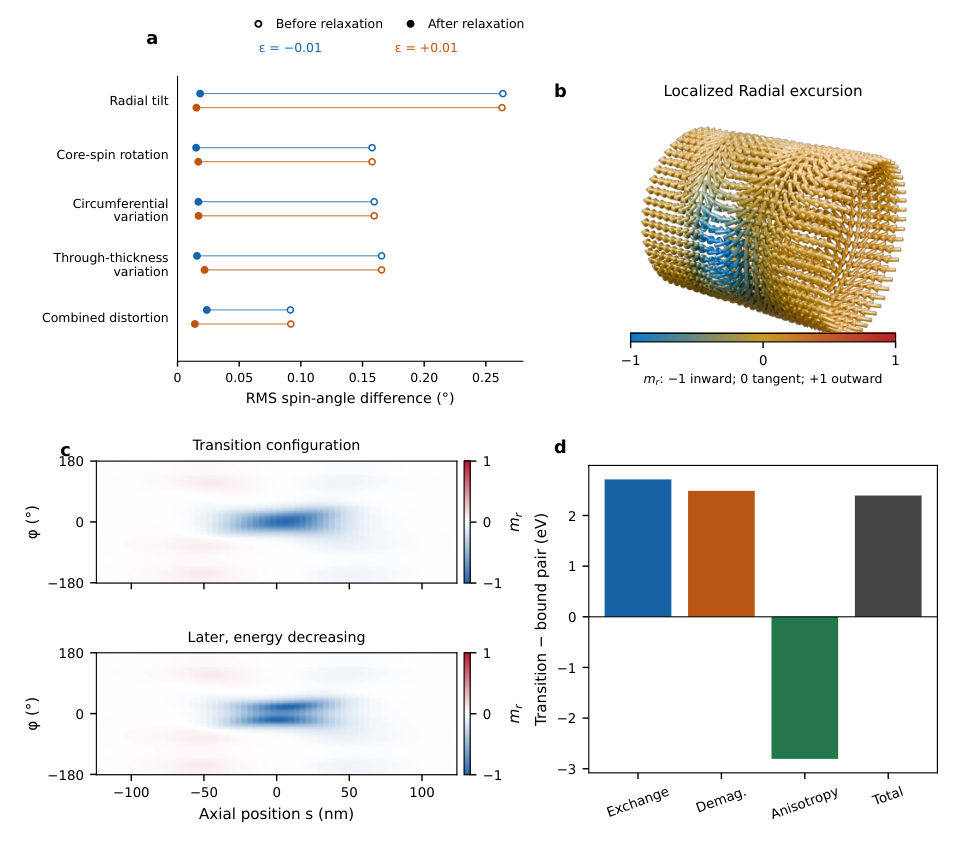
<figcaption class="paper-figure-caption"><b>Fig 5.</b> Figure 5: A restoring bound branch with a localized radial escape coordinate. a, RMS spin-angle difference from one unperturbed relaxed reference, before (open symbols) and after (filled symbols) free relaxation. Both signs of five small distortions are tested: radial tilt, core-spin rotation, circumferen- tial variation, through-thickness variation and combined distortion. The maximum imposed spin-vector change is approximately 0.01 (ϵ = ±0.01). Angles are measured over all occupied cells after remov- ing only common axial translation. Initial differences of 0.092°–0.264° decrease to 0.014°–0.024°. The residual distortions remain resolved. These are ten deterministic returns, not a...</figcaption>
</figure>
</div>

<p><strong>Summary.</strong> This paper proposes a novel magnetic memory bit based on a topologically stabilized $360^\circ$ domain wall confined within a hollow ferromagnetic tube. Using micromagnetic simulations, the authors prove that this structure maintains stability and supports extremely fast, controllable motion via current-driven transport. This work establishes a physical pathway for next-generation, high-density magnetic data storage.</p>
<p><strong>Why it may be interesting.</strong> While focused on spintronics, the study involves complex non-linear dynamics (LLG equation) and topological constraints, which share mathematical parallels with models used in open quantum systems and non-equilibrium statistical mechanics.</p>
<details>
<summary>Detailed structure</summary>
<p><strong>Main problem.</strong> The primary goal is to develop a stable, fast, and locally distinguishable magnetic memory carrier using a topological spin structure.</p>
<p><strong>Main result.</strong> The authors demonstrate that a $360^\circ$ domain wall confined in a hollow tube exhibits stable motion at high speeds (up to 1 km/s) without needing external fields or microscopic interactions.</p>
<p><strong>Method.</strong> The study combines analytical energetics with micromagnetic simulations solving the Landau–Lifshitz–Gilbert equation under spin-transfer torque.</p>
<p><strong>Model / system.</strong> The system is a $360^\circ$ domain wall formed by two successive $180^\circ$ reversals within a hollow ferromagnetic tube. Stability is governed by topological winding numbers and energy costs associated with radial rotation.</p>
<p><strong>Key observables.</strong> Wall velocity (up to 1 km/s), retention of local readout contrast after pulsed transport, and the quantitative contribution of internal spin rotation to total displacement.</p>
<p><strong>Important parameters / regimes.</strong> Mean radius of $80 	ext{ nm}$, magnetic shell thickness of $4 	ext{ nm}$, and material parameters like exchange stiffness ($A$) and saturation magnetization ($M_s$).</p>
<p><strong>Assumptions / limitations.</strong> Thermal noise is omitted from the analysis, and the geometry of the hollow tube is crucial as it removes lateral edge constraints.</p>
<p><strong>Figures summary.</strong> Figures illustrate the $360^\circ$ domain wall texture, the energy profile showing finite separation, and comparisons between measured displacement and theoretical contributions from internal spin rotation during transport.</p>
<p><strong>Paper structure.</strong> The paper progresses from establishing the physical requirements for memory carriers to modeling the specific $360^\circ$ domain wall structure, simulating its stability and dynamics under current drive, and finally testing its robustness through various transport and distortion analyses.</p>
</details>
<details>
<summary>Abstract</summary>
<p>Magnetic racetrack memory requires localized carriers that combine rapid motion, resistance to perturbations and a detectable signal. Here we show how a 360° domain wall in a hollow ferromagnetic tube combines these properties within a single continuous magnetic shell. Two successive magnetization reversals form a bound object whose surrounding domains point in the same direction. Analytical energetics and micromagnetic simulations establish its finite separation, recovery from tested perturbations and current driven transport without microscopic Dzyaloshinskii-Moriya interaction or a maintaining field. The texture's winding resists unwinding while radial rotation carries an energy cost, providing a specific control over stability. Relative rotation of the constituent spins accounts quantitatively for additional displacement during current onset. The wall supports motion at hundreds of metres per second, with transient velocities approaching one kilometre per second at stronger drive. A prepared seven-bit pattern retains its carriers and local readout contrast after pulsed transport and recovery. Curved-track and differential-current tests identify radial stiffness and drive uniformity as controls for intact motion. These results establish a physical basis for fast, locally distinguishable tubular magnetic bits and identify a continuous switching pathway that can be targeted by tailored excitation.</p>
</details>
<p><sub><a href="#top">↑ back to top</a></sub></p>

<p><a id="paper-2610.18490"></a></p>
<h3 id="quantitative-modelling-of-solvation-in-2d-materials-via-alchemical-decoupling-and-potential-energy-surfaces"><a href="http://arxiv.org/abs/2610.18490v1">Quantitative Modelling of Solvation in 2D Materials via Alchemical Decoupling and Potential Energy Surfaces</a></h3>
<p><strong>Authors:</strong> Lindsey N. Ioos, Duncan A. Peterson, Scott C. Warren<br>
<strong>Type:</strong> theory · <strong>Category:</strong> statistical mechanics · <strong>PDF:</strong> <a href="https://arxiv.org/pdf/2610.18490v1">https://arxiv.org/pdf/2610.18490v1</a><br>
<strong>Analysis basis:</strong> full PDF text, analyzed in chunks
<strong>Topic relevance:</strong> <code>Keldysh / 2PI / non-Gaussian methods</code> <strong>2/5</strong> · <code>methods for driven-dissipative</code> <strong>1/5</strong></p>
<div class="figure-strip-hint">↔ Scroll figures horizontally</div>
<div class="paper-figures-scroll">
<figure class="paper-figure-card">
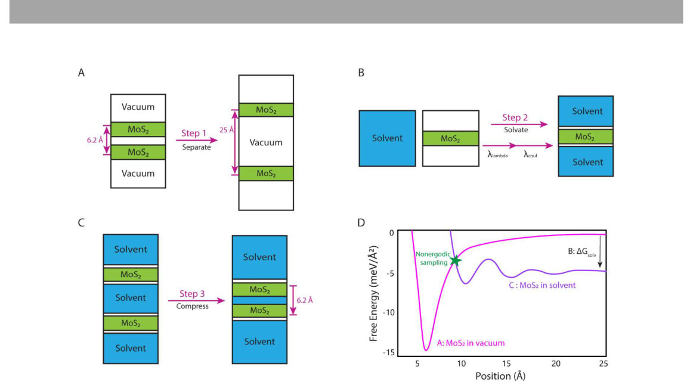
<figcaption class="paper-figure-caption"><b>Fig 1.</b> Fig. 1: Three step method for calculating PMF curves. (A) Step one involves calculating the energy of separating two sheets in a vacuum. (B) Once separated, the energy to solvate the sheets are calculated. (C) The sheets are then brought together while immersed in solvent. (D) This process calibrates the broken energy surfaces to create a full PMF curve.</figcaption>
</figure>
<figure class="paper-figure-card">
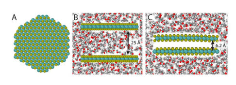
<figcaption class="paper-figure-caption"><b>Fig 2.</b> Fig. 2: PMF simulation details. (A) The hexagonal MoS2 sheet used for simulations, 4.1 nm edge to edge length. (B) Sheets separated at maximum distance used in the simulation (25 Å) with solvent between. (C) Minimum distance between sheets (6.2Å), resulting in solvent ejected from the structure.</figcaption>
</figure>
<figure class="paper-figure-card">

<figcaption class="paper-figure-caption"><b>Fig 3.</b> Fig. 3: The decoupling approach to calculating solvation energy. Beginning with all interactions turned off, LJ interactions are incrementally turned on. Once LJ interactions are fully turned on, the coulombic interactions are also incrementally turned on. The change in energy is calculated at each point, giving the total solvation energy.</figcaption>
</figure>
<figure class="paper-figure-card">
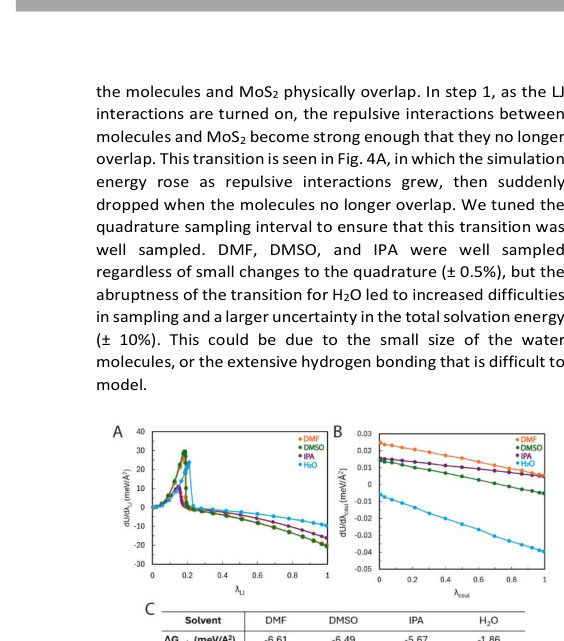
<figcaption class="paper-figure-caption"><b>Fig 4.</b> Fig. 4: Results of the alchemical decoupling method for calculating solvation energy for simulations of DMF, DMSO, IPA, and H2O. (A) The LJ component is isolated and slowly turned on. (B) The coulombic component is then also turned on. (C) The total Gibbs free energy of solvation calculated.</figcaption>
</figure>
<figure class="paper-figure-card">
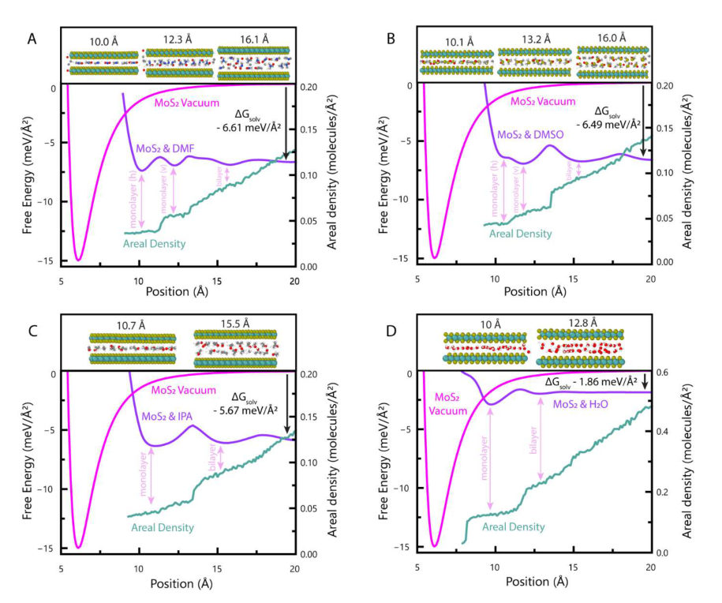
<figcaption class="paper-figure-caption"><b>Fig 5.</b> Fig. 5: The changes in the number of molecules between the two sheets of MoS2 throughout the simulation are shown in (A) DMF, (B) DMSO, (C) IPA, and (D) H2O. The stable structures, visualized as plateaus in the areal density curve and the minima from the potential energy surfaces, are labelled and a snapshot of the simulation solvent orientation is pictured.</figcaption>
</figure>
</div>

<p><strong>Summary.</strong> This work develops an advanced simulation technique using alchemical decoupling to accurately model the solvation free energy of 2D materials like $   ext{MoS}_2$. By connecting disconnected potential energy surfaces, the authors predict that these materials are stabilized by solvent layers, leading to a much higher barrier against full desolvation than previously thought.</p>
<p><strong>Why it may be interesting.</strong> The focus on calculating free energy landscapes and phase stability using advanced simulation techniques (alchemical decoupling) is highly relevant to understanding complex many-body interactions in condensed matter systems.</p>
<details>
<summary>Detailed structure</summary>
<p><strong>Main problem.</strong> The study aims to understand the solvation and stability mechanisms of 2D materials, which is crucial for predicting their aggregation and exfoliation behavior in solution.</p>
<p><strong>Main result.</strong> The authors predict a significantly higher barrier to full desolvation compared to prior simulations, suggesting that 2D materials tend to retain stable monolayers of solvent between layers rather than fully desolvating.</p>
<p><strong>Method.</strong> The research employs an improved computational strategy that uses the Gibbs free energy of solvation ($\Delta G_{	ext{solv}}$) to accurately calibrate two disconnected potential energy surfaces (PES) for the fully desolvated and fully solvated states.</p>
<p><strong>Model / system.</strong> The system involves 2D materials, specifically $    ext{MoS}_2$, suspended in various solvents ($  ext{DMF}$, $    ext{DMSO}$, $   ext{IPA}$, $    ext{H}_2    ext{O}$). The modeling uses molecular simulations under NPT conditions.</p>
<p><strong>Key observables.</strong> Potential of Mean Force (PMF) curves for sheet separation, solvation free energy ($\Delta G_{	ext{solv}}$), and the areal density of solvent molecules between layers.</p>
<p><strong>Important parameters / regimes.</strong> The simulation involves varying a coupling parameter ($\lambda$) for alchemical decoupling, and the analysis covers separations from $0.5 	ext{ nm}$ to $2.5 	ext{ nm}$.</p>
<p><strong>Assumptions / limitations.</strong> The method assumes that the solvation energy can bridge the gap between the vacuum and solvated PES, correcting for issues like unrealistic sheet bending in prior simulations.</p>
<p><strong>Figures summary.</strong> Figures illustrate the three-step method for calculating PMF curves (vacuum, solvation energy, solvent-immersed approach) and show the calculated PMF curves for various solvents compared to previous literature.</p>
<p><strong>Paper structure.</strong> The paper first establishes the physical problem (solvation/exfoliation) and introduces the improved computational methodology using $\Delta G_{	ext{solv}}$. It then applies this method to calculate solvation energies for different solvents and uses the resulting PES to predict structural stability and barriers.</p>
</details>
<details>
<summary>Abstract</summary>
<p>Understanding why 2D materials remain suspended in solutions is essential to understanding the mechanisms of aggregation and exfoliation. These dynamics have been difficult to model because of the long timescales and large activation energies involved in these simulations. Here we describe an improved strategy for modelling the solvation and stability of 2D materials that uses the Gibbs free energy of solvation to accurately calibrate two disconnected potential energy surfaces for the fully desolvated and fully solvated 2D materials. By joining these surfaces using solvation energy, we obtain predictions for 2D material stability in various solvents that are qualitatively different than prior simulations and that have excellent agreement with experimental results. Our approach predicts a much higher barrier to full desolvation of the material, suggesting that materials that appear to be aggregated in fact still retain monolayers of solvent between adjacent layers of 2D materials. This work provides much needed understanding on the interactions between the solvent and 2D material that can guide future experimental work.</p>
</details>
<p><sub><a href="#top">↑ back to top</a></sub></p>
<hr>
<p>
<a href="index.html">← Index</a>
 · <a href="papers_05.html">← Previous</a> · <a href="papers_07.html">Next →</a>
</p>
<hr>

</body>
</html>
